金额1500镑的生活资料，从来没有作为资本同被解雇的工人对立过。作为资本同他们对立的，是现在转化为机器的1500镑。仔细地考察一下就会看出，这1500镑只是代表被解雇的50个工人一年所生产的壁纸的一部分，工人们从雇主那里以货币形式而不是以实物形式得到这一部分作为工资。他们用这些转化为1500镑的壁纸购买具有同样金额的生活资料。因此，这些生活资料对于他们来说，不是资本，而是商品，而他们本身对于这些商品来说，不是雇佣工人，而是买者。机器把他们从购买手段中“游离”出来于是就把他们从买者转化为非买者。因此对这些商品的需求减少了。如此而已。如果需求的这种减少没有由需求在其他方面的增加来补偿，商品的市场价格就会下降。如果这种情况延续的时间较长而且范围较广，生产这些商品所雇用的工人就会被解雇。以前用来生产必要生活资料的一部分资本，就以其他的形式再生产出来。当市场价格下降和资本转移时，生产必要生活资料所雇用的工人也从一部分工资中被“游离”出来。可见，辩护士先生并没有证明，机器由于把工人从生活资料中游离出来，同时就把这些生活资料转化为雇用这些工人的资本；反而用自己经过考验的供求规律证明了，机器不仅在采用它的生产部门，而且还在没有采用它的生产部门把工人抛向街头。
被经济学上的乐观主义所歪曲的事实真相是：受机器排挤的工人从工场被抛到劳动市场，增加了那里已可供资本主义剥削支配的劳动力的数量。我们在第七篇将会看到，机器的这种作用，在这里被说成是对工人阶级的补偿，其实正相反，是对工人的极端可怕的鞭笞。(156)在这里只指出一点：从一个工业部门被抛出来的工人，当然可以在另外一个工业部门找职业。如果他们找到了职业，从而在他们和同他们一道被游离出来的生活资料之间重新建立了联系，那么，在这里起中介作用的，是正在挤入投资场所的新追加的资本，而决不是过去已经执行职能的并且现在转化为机器的资本。并且，即使如此，他们的前途也是多么渺茫！这些因为分工而变得畸形的可怜的人，离开他们原来的劳动范围就不值钱了，只能在少数低级的、因而始终是人员充斥和工资微薄的劳动部门去找出路。(157)其次，每个工业部门每年都吸收一批新人，供该部门用于人员的正常补充和扩充。一旦机器把一部分至今在一定工业部门就业的工人游离出来，这些补充人员也要重新分配，由其他劳动部门来吸收，不过，原来的那些牺牲者大部分在过渡期间堕落丧亡。
一个毫无疑问的事实是：机器本身对于工人从生活资料中“游离”出来是没有责任的。机器使它所占领的那个部门的产品便宜，产量增加而且最初也没有使其他工业部门生产的生活资料的数量发生变化。因此，完全撇开年产品中被非劳动者挥霍掉的巨大部分不说，在应用机器以后，社会拥有的可供被解雇的工人用的生活资料同以前一样多，或者更多。而这正是经济学辩护论的主要点！同机器的资本主义应用不可分离的矛盾和对抗是不存在的，因为这些矛盾和对抗不是从机器本身产生的，而是从机器的资本主义应用产生的！因为机器就其本身来说缩短劳动时间，而它的资本主义应用延长工作日；因为机器本身减轻劳动，而它的资本主义应用提高劳动强度；因为机器本身是人对自然力的胜利而它的资本主义应用使人受自然力奴役；因为机器本身增加生产者的财富，而它的资本主义应用使生产者变成需要救济的贫民，如此等等，所以资产阶级经济学家就简单地宣称，对机器本身的考察确切地证明，所有这些显而易见的矛盾都不过是平凡现实的假象，而就这些矛盾本身来说，因而从理论上来说，都是根本不存在的。于是，他们就用不着再动脑筋了，并且还指责他们的反对者愚蠢，说这些人不是反对机器的资本主义应用，而是反对机器本身。
资产阶级经济学家决不否认，在机器的资本主义应用中也出现短暂的不便；但是哪个徽章没有反面呢！对他们说来，机器除了资本主义的利用以外不可能有别的利用。因此，在他们看来，机器使用工人和工人使用机器是一回事。所以，谁要是揭露机器的资本主义应用的真相，谁就是根本不愿意有机器的应用，就是社会进步的敌人！(158)这完全是著名的杀人犯比耳·赛克斯的道理：
“陪审官先生们，这些行商确定是被杀死了。但这不是我的罪过，这是刀的罪过。难道我们因为这种短暂的不便就该禁止用刀吗？请你们想一想！没有刀，哪里有农业和手工业？刀在外科手术上不是很能为人造福，在解剖方面不是给人带来知识吗？此外，在备办喜筵时，刀不是一位称心的助手吗？如果你们禁止用刀，那就等于把我们拖回到野蛮时代的深渊。”(159)
虽然机器在应用它的劳动部门必然排挤工人，但是它能引起其他劳动部门就业的增加。不过，这种作用同所谓的补偿理论毫无共同之处。因为任何一种机器产品，例如一码机织布总是比被它排挤的同种手工产品便宜，所以就产生一条绝对的规律：如果机器生产的物品的总量同它所代替的手工业或工场手工业生产的物品的总量相等，那么，所使用的劳动总量就要减少。生产劳动资料本身如机器、煤炭等等所需要的劳动量的增加，同使用机器而引起的劳动量的减少相比，必然较小。不然的话，机器产品就会同手工产品一样贵，或者更贵。但是事实上，人数减少了的工人所生产的机器制品总量不是不变，而是远远超过被排挤的手工业制品的总量。假定生产40万码机织布所使用的工人，少于生产10万码手工织布所使用的工人。在4倍的产品中包含4倍的原料。因此原料的生产也必须增长为原来的4倍。至于所耗费的劳动资料，如厂房、煤炭、机器等，那么，生产这些东西所必须追加的劳动可能增长的界限，随着机器产品量和同数工人能够生产的手工产品量之间的差额而变化。
可见，随着机器生产在一个工业部门的扩大，给这个工业部门提供生产资料的那些部门的生产首先会增加。就业工人数量会因此增加多少，在工作日长度和劳动强度已定的情况下，取决于所使用的资本的构成，也就是取决于资本不变组成部分和可变组成部分的比例。这个比例又随着机器在这些行业中已经占领或者正在占领的范围不同而有很大变化。随着英国机器体系的进展，注定要到煤矿和金属矿中去劳动的人数惊人地膨胀起来，尽管最近几十年，由于矿业中使用新机器，这种增加变得缓慢了。(160)一种新工人随着机器出现了，这就是机器的生产者。我们已经知道(161)，机器生产以越来越大的规模占领这个生产部门本身。(162)再拿原料来说(163)，毫无疑问，例如棉纺业的飞速发展极大地促进了美国的植棉业，从而不仅大大促进了非洲的奴隶贸易，而且还使饲养黑人成了所谓边疆蓄奴各州的主要事业。1790年，美国进行了第一次奴隶人口调查，当时共有奴隶697000人，而到1861年大约有400万人[354]。另一方面，同样明确的是，机械毛纺织工厂的兴旺，以及耕地不断转化为牧羊场，引起了农业劳动者的大量被驱逐和“过剩”(164)。爱尔兰直到目前还在经历着这个过程，那里的人口从1845年以来几乎减少了一半，并且还在继续减少，以达到同爱尔兰大地主和英格兰毛纺织厂主先生们的需要恰好相适应的那个程度。
如果机器占领了某一劳动对象在取得最终形式前所必须经过的初期阶段或中间阶段，那么，在这种机器制品进入的那些仍保持手工业或工场手工业生产方式的部门中，对劳动的需求就随着劳动材料的增加而增加。例如，机器纺纱业提供的棉纱又便宜又多，使得手工织布业者最初不用增加开支就可以开全工。这样一来，他们的收入增加了。(165)于是人们纷纷拥向棉织业，直到最后，这些被珍妮机、翼锭纺纱机和走锭纺纱机例如在英国招唤出来的80万织工又被蒸汽织机挤垮为止。同样，由于机器生产的衣料充足，男女裁缝和缝纫女工等等的人数也不断增加，直到缝纫机出现为止。
机器生产用相对少的工人人数所提供的原料、半成品、劳动工具等等的数量不断增加，与此相适应，对这些原料和半成品的加工也就分成无数的部门，因而社会生产部门的多样性也就增加。机器生产同工场手工业相比使社会分工获得无比广阔的发展，因为它使它所占领的行业的生产力得到无比巨大的增长。
采用机器的直接结果是，增加了剩余价值，同时也增加了体现这些剩余价值的产品量，从而，在增加供资本家阶级及其仆从消费的物质时，也增加了这些社会阶层本身。这些社会阶层的财富的增加和生产必要生活资料所需要的工人人数的不断相对减少，一方面产生出新的奢侈要求，另一方面又产生出满足这些要求的新手段。社会产品中有较大的部分转化为剩余产品，而剩余产品中又有较大的部分以精致和多样的形式再生产出来和消费掉。换句话说，奢侈品的生产在增长。(166)大工业造成的新的世界市场关系也引起产品的精致和多样化。不仅有更多的外国消费品同本国的产品相交换，而且还有更多的外国原料、材料、半成品等作为生产资料进入本国工业。随着这种世界市场关系的发展，运输业对劳动的需求增加了，而且运输业又分成许多新的下属部门。(167)
在工人人数相对减少的情况下生产资料和生活资料的增加，使那些生产在较远的将来才能收效的产品（如运河、船坞、隧道、桥梁等等）的工业部门中的劳动扩大了。一些全新的生产部门，从而一些新的劳动领域，或者直接在机器体系的基础上，或者在与机器体系相适应的一般工业变革的基础上形成起来。不过，它们在总生产中所占的比重，即使在最发达的国家，也不是很大的。它们所雇用的工人人数的增加，同它们重新造成的对最粗笨的手工劳动的需求成正比目前，这类工业主要有煤气厂、电报业、照相业、轮船业和铁路业。根据1861年的调查（在英格兰和威尔士），煤气业（包括煤气厂、机械设备的生产、煤气公司的经理处等）有15211人[355]，电报业有2399，照相业有2366人，轮船业有3570人，铁路业有70599人[356]（其中包括大约28000个比较固定的“非熟练的”掘土工人以及全部管理人员和商业人员）。所以，这5种新工业总共有94145人。
最后，大工业领域内生产力的极度提高，以及随之而来的所有其他生产部门对劳动力的剥削在内涵和外延两方面的加强，使工人阶级中越来越大的部分有可能被用于非生产劳动，特别是使旧式家庭奴隶在“仆役阶级”（如仆人、使女、侍从等等）的名称下越来越大规模地被再生产出来。根据1861年的人口调查，英格兰和威尔士的总人口为20066224人，其中男子9770259人，妇女10289965人。从中减掉不宜劳动的老幼，所有“非生产的”妇女、少年和儿童，再减掉官吏、牧师、法律界人员、军人等“意识形态的”阶层以及所有专门以地租、利息等形式消费别人劳动的人，最后再减掉需要救济的贫民、流浪者、罪犯等，大致还剩下800万不同年龄的男女，其中包括所有以某种方式在生产、商业和金融等部门执行职能的资本家。在这800万人中有：
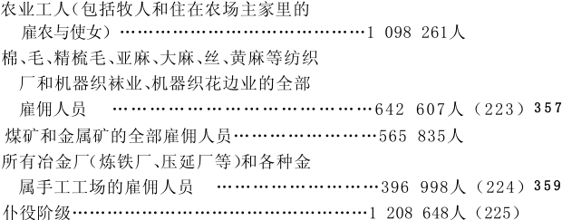
全部纺织厂的雇佣人员和煤矿、金属矿的人员加在一起是1208442人；全部纺织厂的雇佣人员和冶金厂、金属手工工场人员加在一起是1039605人；二者都少于现代家庭奴隶的人数。请看机器的资本主义应用获得了多么辉煌的结果！
7.工人随机器生产的发展而被排斥和吸引。棉纺织业的危机
政治经济学上一切头脑健全的代表人物都承认，新采用机器，对那些首先成为机器竞争对象的旧有手工业和工场手工业中的工人产生灾难性的影响。他们几乎全都为工厂工人的奴隶地位叹息。那么，他们打出的大王牌是什么呢？这就是：机器在其采用时期和发展时期的恐怖过去之后，最终是增加而不是减少劳动奴隶！是的，政治经济学正沉醉于一个令人厌恶的定理，一个连每个相信资本主义生产方式的永恒的自然必然性的“慈善家”都感到厌恶的定理：甚至已经建立在机器生产的基础上的工厂，经过一定的发展时期，经过或长或短的“过渡时期”，也会让比它当初抛向街头的更多的工人进厂受苦！(168)
诚然，有些例子（例如英国精梳毛纺织厂和丝纺织厂）已经表明，到了一定的发展程度上，在工业部门极度扩展的同时，所使用的工人人数不仅可能相对地减少，而且可能绝对地减少(169)。1860年，根据议会的命令对联合王国所有的工厂进行过一次专门调查，在兰开夏郡、柴郡和约克郡工厂区中属工厂视察员罗·贝克管辖的地区，共有652家工厂，其中570家拥有：蒸汽织机85622台，纱锭（不包括并纱锭）6819146个，蒸汽机27439马力，水车1390马力，雇用94119人。而到1865年，这些工厂拥有：织机95163台，纱锭7025031个，蒸汽机28925马力，水车1445马力，雇用88913人。可见，从1860年到1865年，这些工厂的蒸汽织机增加了11%纱锭增加了3%，蒸汽马力增加了5%，而与此同时雇用的人数却减少了5.5%。(170)在1856年到1862年期间，英国的毛纺织业获得了显著的发展，而所使用的工人人数却几乎没有变化。
“这表明，新采用的机器以多么大的程度排挤了以前各个时期的劳动。”(171)
根据某些由经验提供的事实，工厂工人就业人数的增加往往只是表面的，也就是说，这种增加并不是由于已经建立在机器生产基础上的工厂扩大了，而是由于附属部门逐渐和它合并。例如，1838—1856年期间，机械织机及其使用的工厂工人的增加，就（不列颠）棉纺织工厂来说完全是由于这个生产部门的扩大，而在另外一些工厂中，则是由于过去用人的肌肉力推动的织毯机、织带机、织麻布机等等现在采用了蒸汽力。(172)因此，这些工厂工人的增加只是表明就业工人总数的减少。最后，在这里还完全撇开了这种情况，就是除金属工厂外，到处都是少年工人（18岁以下的）、妇女和儿童在工厂人员中远居优势。
然而我们知道，尽管机器生产实际地排挤和潜在地代替了大量工人，但随着机器生产本身的发展（这种发展表现为同种工厂数目的增多或现有工厂规模的扩大），工厂工人的人数最终可以比被他们排挤的工场手工业工人或手工业工人的人数多。假定每周使用的500镑资本中，在旧的生产方式下不变组成部分占，可变组成部分占，也就是说，00镑用于生产资料，300镑用于劳动力，比如说1镑雇一个工人。由于采用机器生产，总资本的构成发生变化。假定现在这个资本分为的不变组成部分和的可变组成部分，或者说，用于劳动力的只有100镑。这样，过去雇用的工人就有被解雇。如果工厂生产扩大，使用的总资本在其他生产条件不变的情况下由500镑增加到1500镑，那么现在就要雇用300个工人，和工业革命以前同样多。如果所使用的资本继续增加到2000镑，那么就要雇用400个工人，比采用旧的生产方式时多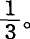使用的工人人数绝对地增加了100人，相对地，即同预付总资本相比，却减少了800人，因为2000镑资本在旧的生产方式下应雇用1200个工人，而不是400个工人。可见，就业工人人数的相对减少和绝对增加是并行不悖的。上面假定，随着总资本的增加，资本的构成保持不变，因为生产条件保持不变。然而我们已经知道，随着机器体系的每一进步，由机器、原料等构成的不变资本部分不断增加，而用于劳动力的可变资本部分则不断减少，同时我们还知道，在任何其他的生产方式下，改良都不是这样经常进行，因而总资本的构成也不是这样经常变化(173)。然而这种经常的变化也经常地被间歇时期和在既定技术基础上的单纯量的扩大所中断。因此就业工人的人数也就增加。例如，在1835年，联合王国的棉、毛、精梳毛、亚麻、丝等纺织厂的工人总数只有354684人，可是到1861年，仅蒸汽织机占用的织工（8岁以上的各种年龄的男女）就有230564人。[362]当然，如果考虑到1838年不列颠的手工织布工人以及和他们一起工作的家属还有80万人(174)，这种增加也就不算大了；而且这里还根本没有提到亚洲和欧洲大陆上被排挤掉的那些手工织布工人。
关于这一点，还要作某些说明，其中我们将部分地谈到理论叙述本身还没有涉及的一些纯粹事实方面的情况。
只要机器生产在一个工业部门内靠牺牲旧有的手工业或工场手工业来扩展，它就一定取得成功，就像用针发枪装备的军队在对付弓箭手的军队时一定取得成功一样。机器刚刚为自己夺取活动范围的这个初创时期，由于借助机器生产出异常高的利润而具有决定性的重要意义。这些利润本身不仅形成加速积累的源泉，而且把不断新生的并正在寻找新的投资场所的很大一部分社会追加资本吸引到有利的生产领域。突飞猛进的初创时期的这种特殊利益，不断地在新采用机器的生产部门重现。但是，一旦工厂制度达到一定的广度和一定的成熟程度，特别是一旦它自己的技术基础即机器本身也用机器来生产，一旦煤和铁的采掘、金属加工以及交通运输业都发生革命，总之，一旦与大工业相适应的一般生产条件形成起来，这种生产方式就获得一种弹性，一种突然地跳跃式地扩展的能力，只有原料和销售市场才是它的限制。一方面，机器直接引起原料的增加，例如轧棉机使棉花生产增加。(175)另一方面，机器产品的便宜和交通运输业的变革是夺取国外市场的武器。机器生产摧毁国外市场的手工业产品，迫使这些市场变成它的原料产地。例如东印度就被迫为大不列颠生产棉花、羊毛、大麻、黄麻、靛蓝等。(176)大工业国工人的不断“过剩”，大大促进了国外移民和外国的殖民地化，而这些外国变成宗主国的原料产地，例如澳大利亚就变成羊毛产地。(177)一种与机器生产中心相适应的新的国际分工产生了，它使地球的一部分转变为主要从事农业的生产地区，以服务于另一部分主要从事工业的生产地区。这种革命是同农业中的各种变革联系在一起的，关于这些变革，我们在这里还不需要作进一步的说明。(178)
1867年2月18日，英国下院根据格莱斯顿先生的提议，编制了一份关于1831年到1866年期间联合王国各种谷物和面粉的总输入和输出的统计材料。我把总结果列举如下。面粉折合成以夸特为单位的谷物。[363]（见下表）
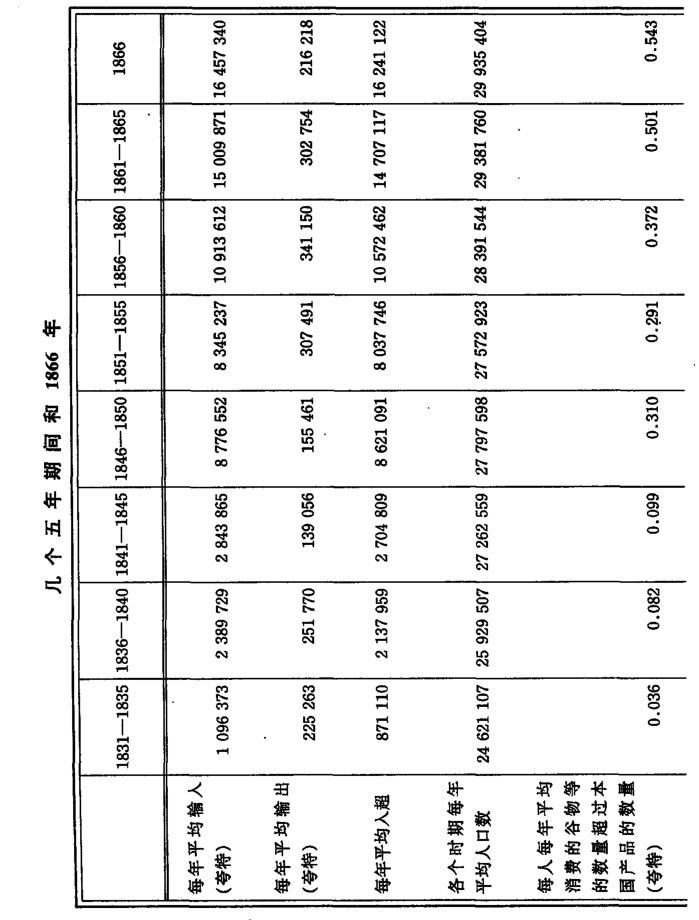
工厂制度的巨大的跳跃式的扩展能力和它对世界市场的依赖必然造成热病似的生产，并随之造成市场商品充斥，而当市场收缩时，就出现瘫痪状态。工业的生命按照中常活跃、繁荣、生产过剩、危机、停滞这几个时期的顺序而不断地转换。由于工业循环的这种周期变换，机器生产使工人在就业上并从而在生活状况上遭遇的没有保障和不稳定性，成为正常的现象。除了繁荣时期以外，资本家之间总是进行十分激烈的斗争，以争夺各自在市场上的份额。这个份额同产品的便宜程度成正比。除了由此造成的资本家竞相采用代替劳动力的改良机器和新的生产方法以外，每次都出现这样的时刻：为了追求商品便宜，强制地把工资压低到劳动力价值以下。(179)
可见，工厂工人人数的增加以投入工厂的总资本在比例上更迅速得多的增加为条件。但是，这个过程只是在工业循环的退潮期和涨潮期内实现。它还经常被技术进步所打断，这种进步有时潜在地代替工人，有时实际地排挤工人。机器生产中这种质的变化，不断地把工人逐出工厂，或者把新的补充人员的队伍拒之门外，而工厂的单纯的量的扩大在把被逐出的工人吸收进来的同时，还把新的人员吸收进来。工人就这样不断被排斥又被吸引，被赶来赶去，而且被招募来的人的性别、年龄和熟练程度也不断变化。
只要粗略地看一下英国棉纺织业的命运，就可以再清楚不过地了解工厂工人的命运。
从1770年到1815年，棉纺织业有5年处于不振或停滞状态在这最初45年的时期，英国工厂主垄断了机器和世界市场。从1815年到1821年，不振。1822年和1823年，繁荣。1824年，废除禁止结社法[364]，工厂普遍大扩展。1825年，危机[365]。1826年，棉纺织业工人极端贫困，发生暴动。1827年，略有好转。1828年，蒸汽织机和输出量大增。1829年，输出（特别是向印度的输出）超过历年1830年，市场商品充斥，境况艰难。1831年到1833年，连续不振；东印度公司对东亚（印度和中国）贸易的垄断权被取消。1834年，工厂和机器大增，工人不足。新济贫法促进农业工人向工厂区流动。农业各郡的儿童被劫掠一空。白奴贸易。1835年，大繁荣。同时，手工织布工人饥饿待毙。1836年，大繁荣。1837年和1838年，不振状态和危机。1839年，复苏。1840年，严重萧条，发生暴动，军队出动干涉。1841年和1842年，工厂工人遭受极大的痛苦。1842年，工厂主解雇工人以便迫使废除谷物法。成千上万的工人涌向约克郡，又被军队驱回，他们的领袖被提交兰开斯特法庭。1843年，严重贫困1844年，复苏。1845年，大繁荣。1846年，起初是继续高涨，以后有回落的征候。谷物法被废除。1847年，危机。为庆祝“大圆面包”，工资普遍降低10%或10%以上。1848年，继续不振。曼彻斯特处于军队保护之下。1849年，复苏。1850年，繁荣。1851年商品降价，工资低微，罢工频繁。1852年，开始好转。罢工继续发生，工厂主以输入外国工人相威胁。1853年，输出增加。普雷斯顿罢工持续八个月，严重贫困。1854年，繁荣，市场商品充斥。1855年，破产消息从美国、加拿大和东亚市场纷纷传来。1856年，大繁荣。1857年，危机。1858年，好转。1859年，大繁荣，工厂增加1860年，英国棉纺织业达到顶点。印度、澳大利亚以及其他市场上商品过剩，直到1863年几乎还没有销完全部存货。同法国缔结贸易协定[366]。工厂和机器激增。1861年，高涨持续了一些时候，随后出现回落，美国南北战争，棉荒。1862年到1863年，完全崩溃。
棉荒的历史太有代表性了，我们不能不略为叙述一下。从1860年到1861年的世界市场状况的简述中可以看出，对于工厂主来说棉荒发生的正是时候，部分地说对于他们是有利的。这是个事实，它已被曼彻斯特商会的报告所承认，帕麦斯顿和德比在议会中也宣布过，而且也为实际情况证明了。(180)当然，1861年联合王国的2887家棉纺织厂中，有许多是小工厂。在这2887家工厂中有2109家是属于工厂视察员亚·雷德格雷夫的管辖范围。根据他的报告，在这2109家工厂中，使用还不到10蒸汽马力的有392家占19%；使用10到20马力之间的有345家，占16%；使用20马力和20马力以上的有1372家。(181)小工厂多半是在1858年以后的繁荣时期建立起来的织布厂，而且大部分是靠一些投机家分头出棉纱、出机器、出厂房建立起来的，由以前的监工或其他没有资财的人经营。这些小工厂主大部分已经破产了。其实，棉荒避免了商业危机，不然他们也会遭到同样的命运。虽然他们占工厂主总数的，但是他们工厂的资本只占投入棉纺织业的资本的极小的一部分。至于瘫痪的规模，据可靠估计，1862年10月有60.3%的纱锭和58%的织机停工。这是整个工业部门的情况，各个区的情况当然是很不同的。只有极少数的工厂开全工（每周60小时），其余工厂都有停工现象。即使那些做全工并且照例拿计件工资的少数工人，由于次棉代替好棉，埃及棉代替海岛棉（在精纺厂）、苏拉特棉（东印度）代替美棉和埃及棉，以及废棉搀苏拉特棉代替纯棉，所得到的周工资也不可避免地减少了。苏拉特棉纤维较短，含有脏物，棉纱易断，经纱上浆不用面粉而用各种重拼料，以及其他等等，这一切都减低了机器的速度，或者减少了一个织工所能看管的织机台数，增加了纠正机器差错所花的劳动，在减少产量的同时也减少了计件工资。使用苏拉特棉时，做全工的工人也要遭受20%、30%或更多的损失。而多数工厂主又把计件工资率降低了5%，7.5%和10%。因此，那些每周只劳动3天、3天半、4天或者每天只劳动6小时的工人的处境也就可想而知了。1863年，在情况已经有所好转之后，织布工人、纺纱工人等的周工资也只有3先令4便士、3先令10便士、4先令6便士、5先令1便士等。(182)即使在这样悲惨的状况下，工厂主在克扣工资方面的创造精神也没有丝毫减退。工厂主的棉花不好和机器不合用等等使制品出了毛病，也成了罚扣工资的部分原因。如果工厂主还是工人住的小屋的房主，那他还要从名义工资中扣除一部分算作房租。工厂视察员雷德格雷夫谈到自动走锭纺纱机的看管工（他们每人看管两台自动走锭纺纱机）时说道：他们
“做满14天全工，得到8先令11便士；从这个数中扣除房租，而工厂主又把房租的一半作为礼物送还工人，这样看管工拿回家去的总共是6先令11便士。1862年的最后时期，织布工人周工资最低是2先令6便士”(183)。
甚至工人只劳动很短的时间，工资中也常常要扣除房租。(184)难怪在兰开夏郡的某些地方发生一种饥饿病！但比这一切更能说明问题的是：生产过程的革命是靠牺牲工人来进行的。这就像解剖学家拿青蛙作实验一样，完全是拿无价值的生物体作实验。工厂视察员雷德格雷夫说：
“我虽然列举了许多工厂的工人的实际收入，但是不能认为，他们每星期都能得到这个数目。由于工厂主不断地进行实验，工人的状况极不稳定……他们的收入随着混合棉的质量而增减，有时和过去相差15%，而过一两个星期竟降低50%至60%。”(185)
这些实验不仅靠牺牲工人的生活资料来进行，而且还以牺牲工人的全部五官为代价。
“拆棉花包的工人告诉我，难忍的臭味薰得人恶心……在混棉间、清棉间和梳棉间里，棉屑和尘埃飞扬，刺激人的七窍，引起咳嗽和呼吸困难……由于纤维短，浆纱时棉纱上附加大量的材料，而且是用各种代用品来代替原来使用的面粉。这就引起织布工人恶心呕吐和消化不良。因为灰尘多，支气管炎、咽喉炎十分流行；其次，由于苏拉特棉里的脏东西刺激皮肤，皮肤病也很流行。”
另一方面，面粉的代用品由于增加棉纱的重量而成为工厂主先生们的福尔土纳特的钱袋。这些代用品使“15磅原料在织成布后重20磅”(186)。工厂视察员1864年4月30日的报告说：
“现在，工业上使用这种办法简直达到卑鄙无耻的程度。我从可靠方面得知，8磅的布是由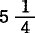磅棉花和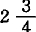磅浆料制成的。另一疋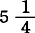磅的布里含有两磅浆料。这还是供出口的普通的衬衫布。其他种类的布里有时竟加了50%的浆料，因此工厂主可以吹嘘，而且确实也在吹嘘，说他们之所以发财致富，是因为他们的布卖得比布在名义上包含的纱的价值还便宜。”(187)
可是，工人们不只是要苦于工厂主在厂内的实验和市政当局在厂外的实验，不只是要苦于工资降低和失业、贫困和救济以及上下两院的赞美词。
“因棉荒而失业的不幸的妇女们，成了社会的遗弃者，而且现在仍然如此……年轻妓女的数目比过去25年增多了。”(188)
可见，不列颠棉纺织工业在最初的45年中，即从1770年到1815年，只有5年是危机和停滞状态，但这45年是它垄断世界的时期。在第二个时期，即从1815年到1863年的48年间，只有20年是复苏和繁荣时期，却有28年是不振和停滞时期。从1815年到1830年，开始同欧洲大陆和美国竞争。从1833年起，靠“毁灭人种”的办法强行扩大亚洲市场。[367]谷物法废除之后，从1846年到1863年，有8年是中常活跃和繁荣时期，却有9年是不振和停滞时期。棉纺织业中的成年男工的状况，即使是在繁荣时期，也可根据下面的附注作出判断。(189)
8.大工业所引起的工场手工业、手工业和家庭劳动的革命
（a）以手工业和分工为基础的协作的消灭
我们已经看到，机器如何消灭了以手工业为基础的协作和以手工业分工为基础的工场手工业。(190)收割机是前一种情况的例子，它代替了收割者的协作。制针机是后一种情况的明显例子。据亚当·斯密说，在他那时候，10个男人分工合作每天能制针48000多枚。但是现在，一台机器在一个十一小时工作日中就能制针145000枚。一个妇女或少女平均可以看管4台这样的机器，因此，她用机器每天可以生产针近60万枚，每星期就可以生产300多万枚。(191)如果一台单个的工作机代替了协作或工场手工业，那么，工作机本身又可以成为手工业生产的基础。但是，手工业生产在机器基础上的再现只是向工厂生产的过渡，只要机械动力（蒸汽或水）代替人的肌肉来推动机器，工厂生产通常就会出现。小生产可以间或地并且也只能是暂时地同机械动力结合起来，那或是靠租用蒸汽，如伯明翰的某些工场手工业，或是靠采用小型热力机，如织布业等的某些部门。(192)在考文垂的丝织业里，一种“小屋工厂”的实验曾自发地发展起来。由几排小屋围成的方形场地的中间，建起一座安装蒸汽机的所谓机器房，蒸汽机通过枢轴同各个小屋中的织机连接起来。蒸汽一律是租用的，例如每台织机交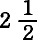先令。不管织机是否转动，蒸汽费都得按周支付。每个小屋有2—6台织机，这些机器有的是工人的，有的是赊购的，有的是租来的。小屋工厂和真正的工厂之间的斗争持续了12年以上。结果是300家小屋工厂完全破产。(193)在过程的性质并不是一开始就要求大规模生产的场合，那些最近几十年间新兴的工业，例如信封制造业、钢笔尖制造业等等，通常都是先经过手工业生产，然后经过工场手工业生产这些短暂的过渡阶段才达到工厂生产这种形态变化，在制品的工场手工业生产不是由按顺序的各个发展过程组成，而是由许多各不相干的过程组成的地方，最为困难。例如，这种情形对于钢笔尖工厂就是一大障碍。但是大约15年前就已经发明了一种自动机，可以一下子完成6种各不相干的过程。1820年手工业提供的第一批12打钢笔尖价格7镑4先令，1830年工场手工业提供的为8先令，而现在工厂提供给批发商的价格是2到6便士。(194)[368]
（b）工厂制度对于工场手工业和家庭劳动的反作用
随着工厂制度的发展和随之而来的农业的变革，不仅所有其他工业部门的生产规模扩大了，而且它们的性质也发生了变化。机器生产的原则是把生产过程分解为各个组成阶段，并且应用力学、化学等等，总之应用自然科学来解决由此产生的问题。这个原则到处都起着决定性的作用。因此，机器时而挤进工场手工业的这个局部过程，时而又挤进那个局部过程。这样一来，从旧的分工中产生的工场手工业组织的坚固结晶就发生溶解，并给不断变化腾出位置。此外，总体工人即结合工人的构成也发生了根本的变革。同工场手工业时期相反，现在，只要可行，分工的计划总是把基点放在使用妇女劳动、各种年龄的儿童劳动和非熟练工人劳动上，总之，放在使用英国人所谓的“廉价劳动”上。这一情况不仅适用于使用机器或者不使用机器的一切大规模结合的生产，而且适用于在工人的私人住宅或者在小工场中进行生产的所谓家庭工业。这种所谓的现代家庭工业，与那种以独立的城市手工业、独立的农民经济，特别是以工人家庭的住宅为前提的旧式家庭工业，除了名称，毫无共同之处现在它已经转化为工厂、手工工场或商店的外部分支机构。资本除了把工厂工人、手工工场工人和手工业工人大规模地集中在一起，并直接指挥他们，它还通过许多无形的线调动着另一支居住在大城市和散居在农村的家庭工人大军。例如，蒂利先生在爱尔兰的伦敦德里所开设的衬衫工厂，就雇用着1000个工厂工人和9000个散居在农村的家庭工人。(195)
现代工场手工业中对廉价劳动力和未成熟劳动力的剥削，比在真正的工厂中还要无耻，因为工厂所拥有的技术基础，即代替肌肉力的机器和轻便的劳动，在现代工场手工业中大多是不存在的；同时在现代工场手工业中，女工或未成熟工人的身体还被丧尽天良地置于有毒物质等等的侵害之下。而这种剥削在所谓的家庭劳动中，又比在工场手工业中更加无耻，这是因为：工人的反抗力由于分散而减弱，在真正的雇主和工人之间挤进了一大批贪婪的寄生虫，家庭劳动到处和同一生产部门的机器生产或者至少是工场手工业生产进行竞争，贫困剥夺了工人必不可少的劳动条件——空间、光线、通风设备等等，就业越来越不稳定，最后，在这些由大工业和大农业所造成的“过剩”人口的最后避难所里，工人之间的竞争必然达到顶点。由于采用机器生产才系统地实现的生产资料的节约，一开始就同时是对劳动力的最无情的浪费和对劳动发挥作用的正常条件的剥夺，而现在，在一个工业部门中，社会劳动生产力和结合的劳动过程的技术基础越不发达，这种节约就越暴露出它的对抗性的和杀人的一面。
（c）现代工场手工业
现在，我举几个例子来说明上述原理。其实读者已经从工作日那一章看到大量例证。伯明翰及其近郊的金属手工工场除雇用1万个妇女外，还雇用3万个儿童和少年，大多数都干着很重的活。他们在这里的有害健康的铸铜业、钮扣业、珐琅业、电镀业和油漆业中劳动。(196)伦敦的各家书报印刷厂由于让成年和未成年的工人从事过度劳动而博得了“屠宰场”的美名。(197) 在订书业中也存在着这种过度劳动，这里的牺牲品主要是妇女、少女和儿童。在制绳业中，未成年的工人担负着繁重的劳动，在制盐、制蜡烛以及其他化工工场中，他们还得做夜工；在尚未采用机械动力的丝织业中，织机是由少年来推动的，这种活简直能累死人。(198)一种最丢脸、最肮脏、报酬最低、主要是雇用少女和妇女来干的活是清理破布。我们知道，大不列颠不仅自己拥有无数的破布，而且还是全世界破布贸易的中心破布从日本、遥远的南美各国和加那利群岛流进来。但是，它的主要供应来源是德国、法国、俄国、意大利、埃及、土耳其、比利时和荷兰破布用于做肥料、床垫、再生呢绒，还当作造纸的原料。这些清理破布的女工是传播天花及其他传染病的媒介，而她们自己就是这些疾病的最先的牺牲者。(199)除金属矿和煤矿之外，砖瓦工场可以作为典型的例子，来说明过度劳动、繁重的和不适当的劳动以及那些从幼年起就被使用的工人在这方面所受到的摧残。在英国，这种砖瓦工场只是间或采用新发明的机器（1866年）。从5月到9月，劳动是从早晨5点起到晚上8点止，如果是在户外晾干，则往往从早晨4点起到晚上9点止。早晨5点至晚上7点的工作日算是“缩短的”、“适度的”了。男女儿童从6岁起，甚至从4岁起就被使用。他们劳动的时间同成年人一样长，甚至往往比成年人还要长。活很吃力，夏天的酷热更容易使人精疲力竭。例如在莫克斯利的一个制砖工场，一个24岁的姑娘每天制砖2000块，只有两个未成年的女孩子作助手，帮她运土和垛砖。这两个女孩子每天要从30英尺深的土坑里通过很滑的斜坡挖出10吨粘土，并把它运到210英尺远的地方去。
“通过制砖工场这座炼狱，儿童在道德上没有不极端堕落的……他们从幼年起就听惯了各种下流话，他们在各种卑劣、猥亵、无耻的习惯中野蛮无知地长大，这就使他们日后变成无法无天、放荡成性的无赖汉……他们的居住方式是道德败坏的一个可怕根源。每个成型工〈他是真正的熟练工人，又是一个工人小组的头〉要在自己的小屋里安排他这一班7个人的吃和住。这些人不管是不是他的家里人，男女青少年都睡在他的小屋里。这种小屋通常只有2个房间，个别的才有3个房间，他们统统睡在地上，通风很差。他们劳累一天，混身汗水，已经精疲力竭，哪还能讲究卫生、清洁和礼貌。这样的小屋多数都是混乱和肮脏的真正标本……雇用少女干这种活的最大弊病就是，这种情况往往使她们从幼年起就终生沦为放荡成性的败类。在自然使她们懂得自己是个女人之前，她们已经变成粗鲁的、出言下流的男孩子。她们身上披着几块肮脏的布片，裸露大腿，蓬头垢面，根本不在乎什么端庄和羞耻。吃饭的时候，她们伸开四肢躺在田野上，或者偷看在附近运河里洗澡的小伙子。她们干完了白天的重活，就换一身好一点的衣服，陪着男人上酒馆。”
所有这种工人从幼年起都酗酒，这完全是很自然的事。
“最糟糕的是，制砖工人自暴自弃。一个比较好的工人曾对绍索菲尔兹的牧师说，先生，您感化一个制砖工人，那简直比感化魔鬼还难！”(200)
关于现代工场手工业（这里指除真正的工厂之外的一切大规模的工场）中劳动条件的资本主义的节约，可以在《公共卫生报告》第4号（1861年）和第6号（1863年）中找到大量的官方材料。报告中关于工场，特别是关于伦敦印刷业和裁缝业工场的描绘，超过了我们的小说家的最可怕的幻想。对工人健康状况的影响，是不言而喻的。枢密院主任医官兼《公共卫生报告》主编西蒙医生说：
“我在我的第4号报告〈1861年〉中曾指出，工人要坚持他们首要的健康权利，也就是说，要求雇主无论叫工人干什么活时，都要在责任所及的范围内，使劳动避免一切可以避免的有害健康的情况，这实际上是办不到的。我曾指出，当工人事实上没有能力自己实现这个健康权利的时候，他们也不可能从卫生警察官吏那里得到任何有效的帮助……现在，无数的男女工人的生命，只是由于他们的职业所造成的无止境的肉体折磨，便无谓地受到摧残而缩短了。”(201)
为了说明工场对工人健康状况的影响，西蒙医生还列出一张死亡统计表(202)：
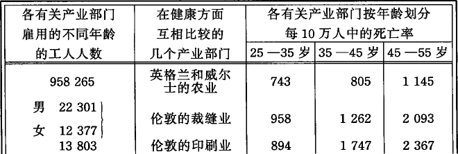
（d）现代家庭劳动
我现在来谈谈所谓家庭劳动。为了对这个在大工业的背景下建立起来的资本的剥削领域和它的骇人听闻的状况有个简略的了解不妨考察一下例如英格兰某些偏僻乡村经营的那些表面上充满田园风味的制钉业。(203) 不过在这里，只要从花边业和草辫业中完全没有采用机器，或者同机器生产和工场手工业生产完全没有发生竞争的部门中举出几个例子就够了。
在英国从事花边生产的共有15万人，其中受1861年工厂法约束的大约有1万人，其余的14万人绝大多数是妇女、男女少年和儿童，其中男性很少。这些“廉价的”剥削材料的健康状况，可以从诺丁汉贫民诊所杜鲁门医生的下列统计材料中看出来。在686个患病的花边女工（大部分是17岁到24岁）中，患肺病的比率如下(204)：
1852年每45人中有1人1857年每13人中有1人
1853年每28人中有1人1858年每15人中有1人
1854年每17人中有1人1859年每9人中有1人
1855年每18人中有1人1860年每8人中有1人
1856年每15人中有1人1861年每8人中有1人
肺病率的这种增长，一定会使最乐观的进步党人和最善于像孚赫那样撒谎的德国自由贸易论贩子感到满意的。
受1861年工厂法约束的是采用机器生产的真正花边业，而在英国，这一行业通常都已经采用机器了。我们要在这里略加考察的部门（我们的考察仅限于所谓家庭工人，而不涉及集中在手工工场和商店等处的工人），可分为两类：一类是花边整理（对机织花边进行最后加工，它又分成许多工种），另一类是手织花边。
花边整理当作一种家庭劳动，或者是在所谓“老板娘家”进行的或者是在妇女家里由她自己或同她的子女一道进行的。那些开设“老板娘家”的妇女本身也是贫穷的。工场就是她们的私宅的一部分。她们从工厂主或商店老板等人那里承揽定货，使用妇女、少女和幼童的劳动，其人数要看她们房间的大小和营业需要的变动情况而定。雇用的女工的人数有些工场是20至40人，有些工场是10至20人。儿童开始劳动的平均最低年龄是6岁，但有些儿童不满5岁就开始劳动了。劳动时间通常是从早晨8点到晚上8点，中间有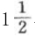小时的吃饭时间，吃饭时间很不规则，而且往往是在臭气熏天的小工房里吃饭。生意好的时候，往往从早晨8点（有时是6点）干到夜里10、11或12点。在英国兵营中，每个士兵规定占有500至600立方英尺的空间，在军医院里规定占有1200立方英尺。而在这样的小工房里，每人只有67—100立方英尺。同时煤气灯还消耗空气中的氧气。为了保持花边的清洁，即使在冬天，儿童们也往往必须把鞋脱掉，哪怕地面上铺的是石板或砖块。
“在诺丁汉，常常可以看到15个至20个儿童挤在一间也许不超过12英尺见方的小房间里，一天24小时内要干15小时，这种劳动本身由于单调乏味而令人厌倦，而且劳动条件对健康极为不利……甚至年龄最小的儿童干起活来也紧张得要命和迅速得惊人，他们的手指几乎不能稍停一下或放慢一点。如果有人向他们问话，他们也眼不离活，惟恐耽误了一分一秒。”
劳动时间越长，“老板娘”用“长棍”来催促儿童的次数就越多
“儿童们逐渐疲乏了。他们的劳动单调乏味，极费眼力，由于姿势持久不变而格外累人，当这种长时间的劳动快要结束时，他们简直像小鸟一样不能安静下来。这是真正的奴隶劳动。” (205)
如果妇女是同自己的子女在家里（这个家，在现代意义上，就是租来的一间房子，往往是一间阁楼）一道劳动，情况就更坏到不能再坏了。这种劳动在诺丁汉周围80英里的地区内都可见到。在商店干活的儿童，晚上9点或10点下工时，往往还要给他一捆活，让他带回家去干。资本主义的伪君子这样做时，当然会通过他的雇佣奴才的嘴巴说上一句漂亮话：“这是给你母亲的”，但是他非常清楚，可怜的孩子必然要坐下来帮着母亲干。(206)
手织花边业主要分布在英格兰的两个农业区。一个是霍尼顿花边业区，包括德文郡南海岸20英里至30英里宽的地带和北德文的少数地方；另一个区包括白金汉、贝德福德、北安普敦等郡的大部分，以及牛津郡和亨廷登郡的邻近地区。农业短工住的小屋通常就是工场。有些手工工场老板雇有3000多个这样的家庭工人，主要是儿童和少年，全部是女性。在花边整理那里见到的情况又重新出现了。只不过“老板娘家”被贫穷妇女用自己小屋开办的所谓“花边学校”代替了。在这些学校里劳动的儿童从5岁起（有时还要小）直到12岁或者15岁。在第一年，年龄最小的儿童每天劳动4至8小时，稍大一些的就从早晨6点劳动到晚上8点或10点。
“工房通常是小屋的普通卧室，为了挡风，烟囱也堵死了，住在里面的人甚至在冬天也往往只能靠自己的体温来暖和自己。有的地方，这些所谓教室像个小贮藏室，连安装火炉的地方都没有……这些破旧的小屋异常拥挤，空气坏极了。此外，臭水沟、厕所、腐烂物以及经常堆在小屋门外的其他脏物也产生着有害的影响。”
关于占有空间的情况：
“在一所花边学校里，有18个女孩和一个老板娘，每人占有33立方英尺的空间；在另一所臭气熏天的学校里，有18个人，每人占有24立方英尺。在这个行业中，竟雇用2岁到2岁半的儿童干活。”(207)
在白金汉和贝德福德这两个农业郡中不从事手织花边业的地方，草辫业就兴起了。这种行业扩展到赫特福德郡的大部分地区和埃塞克斯郡的西部和北部。1861年，从事草辫业和草帽业的共有48043人，其中有各种年龄的男子3815人，其余都是妇女，20岁以下的有14913人，其中儿童近6000人。在这里，“草辫学校”代替了花边学校。[369]孩子们通常从4岁起，有时在3岁到4岁之间，就开始在这里学编草辫。他们当然受不到任何教育。孩子们自己都把初级小学称为“自然的学校”，来和这种吸血的场所相区别。他们到这种地方来劳动，只是为了完成他们的饿得半死的母亲指定他们完成的活即每天大多要完成30码。下工后，他们的母亲往往还要孩子在家里再劳动到夜里10、11以至12点。他们不断用唾液把麦秆润湿，因此常常割破手指和嘴唇。根据巴拉德医生所综合的伦敦卫生视察员们的共同意见，在卧室或工房中，每个人至少应占有300立方英尺的空间。但是，草辫学校里的空间比花边学校还要小，“每个人只有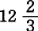立方英尺、17立方英尺、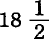立方英尺，最多也不到22立方英尺”。调查委员怀特说：
“这些数字中的最小的数字，比一个装在每边各3英尺的箱子里的儿童所占的空间还要小一半。”
这就是孩子们在12岁或14岁以前的生活享受。贫困堕落的双亲只想从孩子身上榨取尽可能多的东西。孩子们长大以后，自然也就对他们的双亲漠不关心并弃之不管了。
“难怪在这样教养起来的人口中流行着无知和放荡的现象……他们的道德极度败坏……许多妇女都有私生子，而且其中很多人还未到成熟年龄就有了，这种情况使那些熟悉刑事案件统计材料的人也不免大吃一惊。”(208)
但是，堪称基督教权威人士的蒙塔朗贝尔伯爵竟然声称，这些模范家庭的祖国是什么欧洲的基督教模范国家！
在上述两个工业部门中，工资一般都低得可怜（在草辫学校，儿童的最高工资在例外的情况下可以达到3先令），而由于实行实物工资制(209)（这种制度在花边业区特别盛行），工资比它的名义数额就更低了。(210)
（e）现代工场手工业和家庭劳动向大工业的过渡。这一革命由于工厂法在这两种生产方式中的实行而加速
单靠滥用妇女劳动力和未成年劳动力，单靠掠夺一切正常的劳动条件和生活条件，单靠残酷的过度劳动和夜间劳动来实现的劳动力的便宜化，终究会遇到某些不可逾越的自然界限，而以此为基础的商品的便宜化和整个资本主义的剥削，随着也会发生这种情形。当这一点终于达到时（这需要很长的时间），采用机器和把分散的家庭劳动（还有工场手工业）迅速转化为工厂生产的时刻就来到了。
“服饰”的生产为这一运动提供了最明显的例证。根据童工调查委员会的分类，这一工业部门包括草帽和女帽生产者，便帽生产者裁缝，妇女头饰工和女时装工(211)，衬衫生产者和缝纫工，胸衣生产者，手套生产者和制鞋工，以及其他许多较小的行业，如领带和硬领业等等。1861年，在英格兰和威尔士的这些工业部门中雇用的女工总计有586298人，其中20岁以下的至少有115242人，15岁以下的有16560人。在联合王国（1861年），这类女工共有750334人。同一时期，英格兰和威尔士的制帽业、制鞋业、手套业及裁缝业雇用的男工有437969人，其中15岁以下的有14964人，15岁至20岁的有89285人，20岁以上的有333117人。属于这一领域的许多比较小的部门还没有统计在内。但是我们就现有的数字来看，单在英格兰和威尔士，根据1861年的调查，从事这种生产的人就有1024267人也就是说，几乎与农业和畜牧业吸收的人数相等。我们现在开始明白，机器生产出来的这样惊人的大量产品和“游离”出来的这样惊人的大量工人究竟到哪里去了。
从事“服饰”生产的有手工工场，它们只是把具有现成的分散的肢体的分工在手工工场内部再生产出来；还有较小的手工业师傅，不过他们已不再像从前那样为个别消费者劳动，而是为手工工场和商店劳动，这样一来，往往整个城市和整个地区都专门从事某种行业，像制鞋业等等；最后，有所谓的家庭工人，他们生产大部分产品成了手工工场、商店、甚至较小的手工业师傅的分支机构。(212)大量的劳动材料、原料、半成品等由大工业供给，大量的廉价的任人摆布的人身材料则由大工业和大农业“游离”出来的人组成。这一领域中的手工工场所以会产生，主要是因为资本家需要在自己手里拥有一支能适应需求的每一变动的后备军。(213)但这些手工工场又允许分散的手工业生产和家庭生产作为自己的广阔基础与自己一起并存下去。在这些劳动部门中所以能大量地生产剩余价值，同时能使产品越来越便宜，这在过去和现在都主要是因为工资被降到仅够口的最低限度，而劳动时间却延长到人能忍受的最高限度。正是由于转化为商品的人的血和汗变得便宜，销售市场曾不断地扩大并且仍在一天天扩大，而对英国来说，盛行英国习俗和爱好的殖民地市场尤其是如此。最后，转折点来到了。旧方法的基础是单纯对工人材料进行残酷的剥削，同时多少采用一些系统发展起来的分工。这种基础已经不再能适应日益发展的市场和更加迅速地发展着的资本家之间的竞争了。采用机器的时刻来到了。同等地占领这一生产领域所有部门（如女时装业，裁缝业，制鞋业，缝纫业，制帽业等）的具有决定性革命意义的机器，是缝纫机。
缝纫机对工人的直接影响，同所有在大工业时期征服新生产部门的机器的影响大体相似。年龄最小的儿童被排挤了。同家庭工人（其中很多人都是“穷人中的最穷者”）相比，机器工人的工资提高了。处境较好的手工业者的工资由于机器的竞争而降低了。新的机器工人完全是少女和年轻妇女。她们靠机械的力量消灭了男工在较重的劳动中的独霸地位，并且把大批老年妇女和未成熟儿童从较轻的劳动中赶走。这种强有力的竞争扼杀了最弱的手工工人。最近10年来伦敦因饥饿而死亡的人数的惊人增长，同机器缝纫业的扩大是齐头并进的。(214)使用缝纫机的新的女工，按照机器的轻重、大小及其性能，坐着或者站着，用手和脚或者单用手推动机器，她们要耗费大量的劳动力。她们的劳动由于拖得很长（虽然大多比在旧制度下要短些）危害着她们的健康。在制鞋业、胸衣业和制帽业等行业中，本来已经很小很挤的工场，现在再塞进缝纫机对健康就更加有害了。调查委员洛德说：
“一走进有30到40个机器工人挤在一起干活的低矮的工场，就感到受不了……温度（一部分是由烧熨斗的煤气炉发出的）高得可怕……即使在那些盛行所谓适度的劳动时间，即从上午8点至下午6点的工场里，每天照例还是有3个或者4个人晕倒。”(215)
社会的生产方式的变革，生产资料改革的这一必然产物，是在各种错综复杂的过渡形式中完成的。这些过渡形式的变化，取决于缝纫机占领这一或那一工业部门的范围的大小和时间的长短，取决于工人当时的状况，取决于工场手工业生产、手工业生产或家庭生产三者谁占优势，取决于工场的租金(216)，等等。例如，在劳动（主要通过简单协作）多半已经组织起来的女时装业中，缝纫机最初只是工场手工业生产的一个新因素。在裁缝业、衬衫业和制鞋业等行业中，各种形式交织在一起了。有的地方是真正的工厂生产；有的地方是中间人从资本家头儿那里取得原料，在“小屋”或“阁楼”里把10—50或者更多的雇佣工人聚集在缝纫机周围；最后，有的地方则像机器尚未形成有组织的体系而只能小范围使用时会发生的情形那样，是手工业者或家庭工人同自己的家人或少数外面雇来的工人一起，使用属于他们自己的缝纫机。(217)在英国，现在盛行的实际上是这样一种制度：资本家在自己的厂房里集中大量的机器，然后把机器产品分给家庭工人大军去进一步加工。(218)但是，过渡形式的错综复杂并不能掩盖向真正的工厂生产转化的趋势。助长这种趋势的，首先是缝纫机本身的性能，它的多种多样的用途促使以前分散的生产部门在同一个厂房里和在同一个资本的指挥下联合起来；其次是，初步的缝纫工作以及其他一些操作最适合在机器所在的地方进行；最后是，那些用自己的机器进行生产的手工业者和家庭工人不可避免地遭到剥夺。现在，这种命运已经部分地落在他们身上了。投在缝纫机上的资本量的不断增加(219)，刺激了生产，并造成了市场停滞，这就发出了家庭工人出卖缝纫机的信号。缝纫机本身的生产过剩又迫使急于打开销路的缝纫机生产者按周出租缝纫机，这就造成了把小的机器所有者置于死地的竞争局面。(220)机器结构的不断变化和机器的日益便宜，使旧机器也不断地贬值，以致只有那些以极低的价格大批收买这种机器的大资本家，才能从使用这种机器中获利。最后，用蒸汽机代替人，在这里也像在一切类似的变革过程中一样，具有决定性的意义。蒸汽力的运用最初遇到了一些纯粹技术上的障碍，例如机器发生震动，控制机器速度有困难，轻型机器损坏很快等等，但经验很快就教会了人们克服这些障碍。(221)如果说，一方面许多工作机在比较大的手工工场中的集中促进了蒸汽力的应用，那么另一方面，蒸汽同人的肌肉的竞争则加速了工人和工作机在大工厂的集中。例如，英国生产“服饰”(222)的庞大领域，正如大部分其他行业一样，现在正经历着从工场手工业、手工业、家庭劳动过渡到工厂生产的变革。但在这以前，所有这些形式已经在大工业的影响下完全变样、解体，变得畸形了，它们没有显示出工厂制度的积极发展因素，却老早就再现了工厂制度的一切可怕的方面，甚至有过之无不及。(223)
这种自发进行的工业革命，由于工厂法在所有使用妇女、少年和儿童的工业部门的推行而被人为地加速了。强制规定工作日的长度、休息时间、上下工时间，实行儿童的换班制度，禁止使用一切未满一定年龄的儿童等等，一方面要求采用更多的机器(224)，并用蒸汽代替肌肉充当动力(225) 。另一方面，为了从空间上夺回在时间上失去的东西，就要扩充共同使用的生产资料如炉子、厂房等等，一句话，要使生产资料在更大程度上集中起来，并与此相适应，使工人在更大程度上集结起来。每一种受工厂法威胁的工场手工业所一再狂热鼓吹的主要反对论据，实际上不外是：必须支出更大量的资本，才能在旧有规模上继续进行生产。至于说工场手工业和家庭劳动之间的中间形式以及家庭劳动本身，那么，随着工作日和儿童劳动受到限制，它们也就日益失去立足之地。对廉价劳动力的无限制的剥削是它们竞争能力的惟一基础。
工厂生产的重要条件，就是生产结果具有正常的保证，也就是说，在一定的时间里生产出一定量的商品，或取得预期的有用效果，特别在工作日被规定以后更是如此。其次，被规定的工作日的法定休息时间，要求劳动能够突然地和周期地停顿下来，而不损害正处在生产过程中的制品。当然，纯机械性质的行业同那些要经历某种化学和物理过程的行业（如陶器业、漂白业、染色业、面包业以及大部分金属加工业）相比，生产结果比较容易得到保证，劳动的中断也比较容易做到。只要不受限制的工作日、夜工以及对人力的肆意糟蹋照旧存在，每一种自然发生的障碍都会很快被看作生产上的永恒的“自然界限”。没有一种毒药消灭害虫能比工厂法消灭这类“自然界限”更有把握。没有任何人比陶器业的先生们叫喊“不可能”叫得更响亮的了。1864年，工厂法强制施行到他们身上，过了16个月以后，一切不可能都消失了。工厂法所引起的
“用压缩代替蒸发加工陶土的改良方法，烘土坯的炉子的新结构等等，都是制陶技术上极其重要的事件，它们标志着上一世纪无法比拟的制陶技术上的进步……炉温大大降低了，而煤的消耗大大减少了，陶器制作得更快了”(226)。
同各种预言相反，提高的并不是陶制品的成本价格，而是产量，结果从1864年12月到1865年12月的12个月中，陶制品出口的价值比前3年的平均出口价值超过了138628镑。在火柴业里，少年们甚至在吃中饭时也得用火柴棍去浸蘸发热的磷混合溶液，这种溶液的有毒的气体直扑到他们脸上，这种情况过去被认为是自然规律。工厂法（1864年）的实施使工厂不得不节省时间，结果促使一种浸蘸机问世，这种机器发出的气体不会扑到工人身上。(227)目前还没有受到工厂法约束的那些花边工场手工业部门还坚持认为，因为各种花边材料烘干时间长短不同，从3分钟到1小时或1小时以上不等，所以吃饭时间不能固定。对于这种说法，童工调查委员会委员回答说：
“这里的情况和壁纸业的情况一样。这个部门的某些主要工厂主曾激烈地争辩说，由于所使用的材料的性质和这些材料要经过的各道工序的差异，突然停下劳动去吃饭，就会造成重大的损失……按照《工厂法扩充条例》〈1864年〉第6节第6条的规定，自该法公布之日起给予他们18个月的期限，期满后，他们就必须遵行工厂法所规定的休息时间。”(228)
议会刚批准这个法律，工厂主先生们就已经发现：
“我们原来预料实行工厂法后会产生的种种弊端并没有出现。我们没有发现生产有任何瘫痪现象。实际上，我们在同一时间内生产得更多了。”(229)
我们看到，英国议会（肯定不会有人责备它的独创性）根据经验已经认识到，仅仅一项强制性的法律，就可以消除一切有碍于限制和规定工作日的所谓生产上的自然障碍。因此，当一个工业部门实行工厂法时，总要给予6到18个月的时间，在这段时期内，工厂主的事情就是扫除技术上的障碍。米拉波的格言“不可能？永远别对我说这种蠢话！”，特别适用于现代工艺学。但是，如果说工厂法就这样像在温室里那样使工场手工业生产转化为工厂生产所必需的物质要素成熟起来，那么，它又由于使扩大资本支出成为必要而加速了小师傅的破产和资本的积聚。(230)
撇开纯技术上的和技术上可以排除的障碍不说，对工作日的规定还遇到工人本身的不规则的生活习惯的障碍，这特别是发生在这样的地方，那里盛行计件工资，在一天或一星期中所旷费的时间可以由以后的过度劳动或做夜工来补偿，这种方法使成年工人变得野蛮，使他们的未成年的和女性的伙伴遭到毁灭。(231)劳动力耗费方面的这种毫无规则的情形，虽然是对单调乏味的苦役的一种自发的粗暴反应，但在极大程度上是由生产本身的无政府状态引起的，而这种无政府状态又是以资本对劳动力的不受限制的剥削为前提的。除了工业周期的一般的周期变动和每个生产部门的特殊的市场波动外，还出现一种因航海季节的周期性或因赶时髦而形成的所谓旺季，此外，还会突然出现必须在最短期限内完成大批定货的情况。这种短期定货的习惯随着铁路和电报的发展越来越变得经常了。例如，伦敦的一个工厂主说：
“铁路系统扩展到全国各地，大大地助长了短期定货的习惯；买主现在从格拉斯哥、曼彻斯特和爱丁堡每隔14天来一次，或者是到我们供货的西蒂大商行成批购货。他们不再像往常那样从货栈里购买，而是发出必须立即交货的定单。前几年，我们总是可以在淡季预先准备好下一旺季的需要，而现在谁也不能预言将会需要什么。”(232)
在那些尚未受工厂法约束的工厂和手工工场里，在所谓旺季，由于突如其来的定货，周期性地盛行着骇人听闻的过度劳动。在工厂、手工工场和商店的那些外部分支机构里，即在本来就极不规则的家庭劳动领域里，原料和定货完全取决于资本家的情绪，在这里，资本家根本不用去考虑厂房、机器等的利用问题，而只是拿工人的生命去冒险。这个领域，正系统地培育着一支随时可供支配的产业后备军，这支后备军在一年的一部分时间里由于被迫从事非人的劳动而遭到摧残，在另一部分时间里则由于没有工作而穷困堕落。童工调查委员会的报告说：
“雇主们利用家庭劳动习以为常的不规则性，在要完成紧急的活计时，迫使家庭劳动延长到夜间11点、12点、2点，事实上，就像通常所说的，延长到随便什么时间”，而劳动场所又是“臭气熏天，简直会使你晕倒。你可能走到门口，把门打开，但不敢往里走”(233)。
有一个被询问的证人鞋匠说：
“我们的雇主真古怪，他们认为，让一个少年在这半年累得要死，在另外半年又几乎被迫到处闲逛，这对少年没有什么害处。”(234)
这些所谓“商业习惯”（“usages which have grown with the growth of trade”），同技术上的障碍一样，过去和现在都被有利害关系的资本家硬说成是生产上的“自然界限”，这是棉纺织业巨头们在最初受到工厂法(235)威胁时最喜欢叫喊的口号。虽然他们的工业比任何其他工业更依赖于世界市场，从而也更依赖于航海业，但是经验已经揭露了他们的谎言。从此以后，任何一种所谓的“商业障碍”都被英国的工厂视察员看成是一种无聊的借口了。(236)事实上，童工调查委员会的极其认真的调查证明：在某些工业中，规定工作日只不过是把已经使用的劳动量较均衡地分配在全年(237)；这种规定，对于那种害死人的、毫无意义的、本身同大工业制度不相适应的、变化无常的赶时髦的风气(238)，是第一个合理的约束；远洋航行和一般交通工具的发展已经打破了季节性劳动的固有的技术基础(239)；一切其他所谓不能控制的条件，也由于厂房的扩大、机器的增加、同时使用的工人人数的增长(240)以及这些变化对批发商业制度自然产生的反作用而消除了(241)。但是，正像资本通过自己代表的嘴屡次宣布的那样，要资本同意这种变革，“只有在一项普遍适用的议会法令的压力下”(242)，即用法律强制规定工作日的情况下，才能办到。
9.工厂立法（卫生条款和教育条款）。它在英国的普遍实行
工厂立法是社会对其生产过程自发形态的第一次有意识、有计划的反作用。正如我们讲过的，它像棉纱、走锭纺纱机和电报一样，是大工业的必然产物。(243)在谈到工厂立法在英国的普遍实行之前，我们还要简单地提一提英国工厂法中与工作日的小时数无关的某些条款。
撇开卫生条款中使资本家容易规避的措辞不说，这些条款的内容也是非常贫乏的，实际上只是就粉刷墙壁和其他几项清洁措施，通风和危险机器的防护等做出一些规定。我们在第三册里还会谈到，工厂主曾怎样进行疯狂的斗争，反对这些要求他们拿出少量的钱来保护他们“人手”的四肢的条款。这里再一次光辉地证实了自由贸易论者的信条：在一个存在着对抗利益的社会里，人人追逐私利，就会促进公共福利(244)。举一个例子就够了。大家知道，在过去20年间，爱尔兰的亚麻工业以及随之兴起的打麻工厂，都得到了很大的发展。1864年那里的打麻工厂已有约1800个。每到秋冬两季，一些完全不熟悉机器的人，主要是少年和妇女，即附近小租地农民的妻子儿女，便定期地放下地里的活，到打麻工厂从事往辗压机里装填亚麻的劳动。这里的事故，按其数量和程度来说是机器史上根本没有先例的。只在基尔迪南（在科克附近）的一家打麻工厂里，从1852年至856年就一共发生6起造成死亡和60起造成严重残废的事故，而所有这些事故本来只要花几先令，安上一些最简单的装置就可以防止。唐帕特里克各工厂的合格医生怀特，在1865年12月16日的官方报告中说道：
“打麻工厂里的事故可怕到了极点。在许多场合，身体被铡掉。受伤者的通常结局，不是死亡，就是变成残废而痛苦终身。国内工厂数量的增多当然会扩大这种可怕的结果。我相信，国家对打麻工厂进行适当监督，就可以避免身体和生命的大量牺牲。”(245)
为了迫使资本主义生产方式建立最起码的清洁卫生设施，必须由国家颁布强制性的法律。还有什么比这一点能更好地说明资本主义生产方式的特点呢？
“1864年的工厂法使陶器业的200多个工场进行了粉刷和清扫，这些工场已经有20年或者根本就节制了这一类的工作。〈这就是资本的“节欲”！〉这些坊雇有27878个工人，他们至今还在过度的日间劳动中，甚至往往在过度的夜间劳动中，呼吸着极端有害的空气。这种空气使得这种在其他方面危害较少的职业也成为疾病和死亡的温床。工厂法使通风设备大大增加了。”(246)
同时，工厂法的这个部分清楚地表明，资本主义生产方式按其本质来说，只要超过一定的限度就拒绝任何合理的改良。我们一再指出，英国的医生曾异口同声地宣布，每人起码要有500立方英尺的空间才能持续地工作(247)。好了！既然工厂法通过它的各种强制性规定间接地加速了较小的工场向工厂的转化，从而间接地侵害了较小的资本家的所有权，并确保了大资本家的垄断权，那么，法律关于工场中的每个工人应占有必要空间的强制规定，就会一下子直接剥夺成千上万的小资本家！就会动摇资本主义生产方式的根基，也就是说，会破坏大小资本通过劳动力的“自由”购买和消费而实现自行增殖。因此，工厂立法在500立方英尺的空间面前碰壁了。卫生机关、工业调查委员会、工厂视察员，都一再强调500立方英尺的必要性，又一再述说不可能强迫资本接受这一点。这样，他们实际上就是宣布，工人的肺结核和其他肺部疾病是资本生存的一个条件。(248)
尽管工厂法的教育条款整个说来是不足道的，但还是把初等教育宣布为劳动的强制性条件。(249)这一条款的成就第一次证明了智育和体育(250)同体力劳动相结合的可能性，从而也证明了体力劳动同智育和体育相结合的可能性。工厂视察员很快从教师的证词中就发现：虽然工厂儿童上课的时间要比正规的日校学生少一半，但学到的东西一样多，而且往往更多。
“道理很简单。那些在学校里只呆半天的人总是精力充沛，几乎随时都适于并愿意学功课。半工半读的制度使得两种活动互为休息和调剂，因此，对儿童来说，这种制度比不间断地从事其中一种活动要合适得多。一个从清晨就坐在学校里的儿童，特别在暑天，不可能同一个从劳动中来的活泼愉快的儿童相比。”(251)
关于这一点，从西尼耳于1863年在爱丁堡举行的社会学家大会的演说中也可以找到进一步的例证。他在这篇演说中还指出，上层阶级和中层阶级的孩子们的片面的、不生产的和漫长的学习日，只是白白地增加教师的劳动，“同时，不仅无益地并且是绝对有害地浪费着儿童的时间、健康和精力”(252)。正如我们在罗伯特·欧文那里可以详细看到的那样，从工厂制度中萌发出了未来教育的幼芽，未来教育对所有已满一定年龄的儿童来说，就是生产劳动同智育和体育相结合，它不仅是提高社会生产的一种方法，而且是造就全面发展的人的惟一方法。
我们已经看到，大工业从技术上消灭了那种使一个完整的人终生固定从事某种局部操作的工场手工业分工，而同时，大工业的资本主义形式又更可怕地再生产了这种分工：在真正的工厂中，是由于把工人转化为局部机器的有自我意识的附件；在其他各处，一部分是由于间或地使用机器和机器劳动(253)，一部分是由于采用妇女劳动、儿童劳动和非熟练劳动作为分工的新基础(254)。工场手工业分工和大工业性质之间的矛盾强烈地表现出来。例如，它表现在这样一个可怕的事实上：现代工厂和手工工场雇用的大部分儿童从最年幼的时期起就被束缚在最简单的操作上，多年遭受着剥削，却没有学会任何一种哪怕以后只是在同一手工工场或工厂中能用得上的手艺。例如，过去在英国的印刷业中，同旧的工场手工业和手工业制度相适应，学徒工是从比较简单的活过渡到比较复杂的活。他们经过一段学习时期，最终就成为熟练的印刷工人。凡从事这门手工业的人，都必须能读会写。随着印刷机的出现，一切都变了。印刷机使用两种工人：一种是成年工人，他们看管机器；另一种是少年，大多从11岁到17岁，他们的工作只是把纸铺开送到机器上，或者从机器上把印好的纸取下来。他们（特别是在伦敦）在一星期中有好几天要连续不断地从事这种苦工达14、15、16小时，甚至往往一连劳动36小时，而中间只有两小时吃饭和睡觉的休息时间！(255)他们当中大部分人不识字，他们通常都是非常粗野的、反常的人。
“要使他们能胜任自己的工作，不需要任何知识教育；他们很少有机会接触技艺，更少有机会运用判断力；他们的工资虽然在少年中略高一些，但是不会随着他们的成长按比例增加，而且大多数人都没有任何希望被提升到收入较高和责任较大的机器看管工人的职位，因为每一台机器只需要一个看管工人，却往往需要4个少年。”(256)
当他们长大到不适于从事儿童劳动时，也就是最迟到17岁时，就被印刷厂解雇。他们成为罪犯的补充队。企图在别的地方为他们找到职业的某些尝试，也都由于他们的无知、粗野、体力衰退和精神堕落而遭到了失败。
关于工场内部的工场手工业分工所谈到的这一切，也适用于社会内部的分工。只要手工业和工场手工业构成社会生产的普遍基础，生产者对专一生产部门的隶属，他的职业的原有多样性的破坏(257)，就成为发展的必要因素。在这一基础上，每一个特殊的生产部门都通过经验找到适合于自己的技术形态，慢慢地使它完善，而一当达到一定的成熟程度，就迅速地使它固定下来。除商业提供的新的劳动材料外，劳动工具的逐渐改变也会不时地引起变化。一旦从经验中取得适合的形式，工具就固定不变了；工具往往世代相传达千年之久的事实，就证明了这一点。很能说明问题的是，各种特殊的手艺直到18世纪还称为mysteries（mystères）［秘诀］(258) ，只有经验丰富的内行才能洞悉其中的奥妙。这层帷幕在人们面前掩盖他们自己的社会生产过程，使各种自然形成的分门别类的生产部门彼此成为哑谜，甚至对每个部门的内行都成为哑谜。大工业撕碎了这层帷幕。大工业的原则是，首先不管人的手怎样，把每一个生产过程本身分解成各个构成要素，从而创立了工艺学这门完全现代的科学。社会生产过程的五光十色的、似无联系的和已经固定化的形态，分解成为自然科学的自觉按计划的和为取得预期有用效果而系统分类的应用。工艺学也揭示了为数不多的重大的基本运动形式，尽管所使用的工具多种多样，人体的一切生产活动必然在这些形式中进行，正像机器虽然异常复杂，力学仍会看出它们不过是简单机械力的不断重复一样。现代工业从来不把某一生产过程的现存形式看成和当作最后的形式。因此，现代工业的技术基础是革命的，而所有以往的生产方式的技术基础本质上是保守的。(259)现代工业通过机器、化学过程和其他方法，使工人的职能和劳动过程的社会结合不断地随着生产的技术基础发生变革。这样，它也同样不断地使社会内部的分工发生革命，不断地把大量资本和大批工人从一个生产部门投到另一个生产部门。因此，大工业的本性决定了劳动的变换、职能的更动和工人的全面流动性。另一方面，大工业在它的资本主义形式上再生产出旧的分工及其固定化的专业。我们已经看到，这个绝对的矛盾怎样破坏着工人生活的一切安宁、稳定和保障，使工人面临这样的威胁：在劳动资料被夺走的同时，生活资料也不断被夺走(260) ，在他的局部职能变成过剩的同时，他本身也变成过剩的东西；这个矛盾怎样通过工人阶级的不断牺牲、劳动力的无限度的浪费和社会无政府状态造成的灾难而放纵地表现出来(261)。这是消极的方面。但是，如果说劳动的变换现在只是作为不可克服的自然规律并且带着自然规律在任何地方遇到障碍时都有的那种盲目破坏作用而为自己开辟道路(262)，那么，大工业又通过它的灾难本身使下面这一点成为生死攸关的问题：承认劳动的变换，从而承认工人尽可能多方面的发展是社会生产的普遍规律，并且使各种关系适应于这个规律的正常实现。大工业还使下面这一点成为生死攸关的问题：用适应于不断变动的劳动需求而可以随意支配的人，来代替那些适应于资本的不断变动的剥削需要而处于后备状态的、可供支配的、大量的贫穷工人人口；用那种把不同社会职能当作互相交替的活动方式的全面发展的个人，来代替只是承担一种社会局部职能的局部个人。综合技术学校和农业学校是这种变革过程在大工业基础上自然发展起来的一个要素；职业学校是另一个要素，在这种学校里，工人的子女受到一些有关工艺学和各种生产工具的实际操作的教育。如果说工厂立法作为从资本那里争取来的最初的微小让步，只是把初等教育同工厂劳动结合起来，那么毫无疑问，工人阶级在不可避免地夺取政权之后，将使理论的和实践的工艺教育在工人学校中占据应有的位置。同样毫无疑问，生产的资本主义形式和与之相适应的工人的经济关系，是同这种变革酵母及其目的——消灭旧分工——直接矛盾的。但是，一种历史生产形式的矛盾的发展，是这种形式瓦解和新形式形成的惟一的历史道路。“鞋匠，管你自己的事吧！”[374]——手工业智慧的这一“顶峰”，在钟表匠瓦特发明蒸汽机，理发师阿克莱发明经线织机，宝石工人富尔顿发明轮船以来，已成为一种可怕的愚蠢了。(263)
当工厂立法规定工厂、工场手工业等的劳动时，这最初仅仅表现为对资本的剥削权利的干涉。相反地，对所谓家庭劳动(264)的任何规定都立即表现为对父权（用现代语言来说是亲权）的直接侵犯。温和的英国议会对于采取这一步骤长期来一直装腔作势，畏缩不前。但是事实的力量终于迫使人们承认，大工业在瓦解旧家庭制度的经济基础以及与之相适应的家庭劳动的同时，也瓦解了旧的家庭关系本身。不得不为儿童的权利来呼吁了。1866年童工调查委员会的最后报告说：
“不幸的是，所有的证词都表明：男女儿童在自己的父母面前比在任何别人面前都更需要保护。”一般儿童劳动，特别是家庭劳动遭受无限度剥削的制度“之所以能够维持，是因为父母对自己的年幼顺从的儿女滥用权力，任意虐待而不受任何约束或监督……父母不应当享有为每周取得一点工资而把自己的孩子变成单纯机器的绝对权力……儿童和少年有权为防止亲权的滥用而取得立法方面的保护，这种滥用会过早地毁坏他们的体力，并且使他们道德堕落，智力衰退。”(265)
然而，不是亲权的滥用造成了资本对未成熟劳动力的直接或间接的剥削，相反，正是资本主义的剥削方式通过消灭与亲权相适应的经济基础，造成了亲权的滥用。不论旧家庭制度在资本主义制度内部的解体表现得多么可怕和可厌，但是由于大工业使妇女、男女少年和儿童在家庭范围以外，在社会地组织起来的生产过程中起着决定性的作用，它也就为家庭和两性关系的更高级的形式创造了新的经济基础。当然，把基督教日耳曼家庭形式看成绝对的东西，就像把古罗马家庭形式、古希腊家庭形式和东方家庭形式看成绝对的东西一样，都是荒谬的。这些形式依次构成一个历史的发展序列。同样很明白，由各种年龄的男女个人组成的结合劳动人员这一事实，尽管在其自发的、野蛮的、资本主义的形式中，也就是在工人为生产过程而存在，不是生产过程为工人而存在的那种形式中，是造成毁灭和奴役的祸根，但在适当的条件下，必然会反过来转变成人道的发展的源泉。(266)
工厂法从一项在机器生产的最初产物即纺纱业和织布业中实行的特殊法，发展成为整个社会生产中普遍实行的法律，这种必然性，正如我们已经看到的，是从大工业的历史发展进程中产生的(267)。在大工业的背景下，工场手工业、手工业和家庭劳动的传统形态经历着彻底的变革：工场手工业不断地转变为工厂；手工业不断地转变为工场手工业；最后，手工业和家庭劳动领域在相对说来短得惊人的时间内变成了苦难窟，骇人听闻的最疯狂的资本主义剥削在那里为所欲为。在这里最后起了决定作用的，有两方面的情况：第一，经验不断反复证明，如果资本只是在社会范围的个别点上受到国家的监督，它就会在其他点上更加无限度地把损失捞回来(268)；第二，资本家自己叫喊着要求平等的竞争条件，即要求对劳动的剥削实行平等的限制(269)。我们且听一听关于这方面的两种由衷的呼声吧。库克斯利先生们（布里斯托尔的生产钉子、链条等的工厂主），自愿在自己的企业里实行工厂规定。
“因为邻近各厂继续存在着旧的未经规定的制度，所以他们不得不遭受损失，眼看着他们的少年工人在下午6点钟以后被引诱到别的地方去继续做工。他们当然会说：‘这对于我们是一种不公平，并且是一种损失，因为这样会消耗少年工人的部分体力，而从少年取得的全部利益理应属于我们。’”(270)
辛普森先生（伦敦纸袋纸盒厂的工厂主）对童工调查委员会委员说：
“他愿意在任何一个要求实行工厂法的请愿书上签名。无论如何，他在晚上总是感到不安，他在自己的工场关门以后就想，别的工场干的时间更长些，正在把定货从他的鼻子底下抢走。”(271)
童工调查委员会总结说：
“只使较大的雇主的工厂遵守规定，而他们同行业的小工场在劳动时间上却不受任何法律限制，这对较大的雇主是不公平的。在劳动时间的限制上，把较小的工场看作例外，就造成不平等的竞争条件，这是一种不公平。除此以外，对较大的工厂主来说还有一种不利：他们的少年劳动和妇女劳动的供给会被引到不受工厂法约束的工场。最后，这会促使较小的工场增加，而这些较小的工场对国民的健康、福利教育以及普遍的改善，几乎毫无例外都是最为不利的。”(272)
童工调查委员会在它的最终报告中，建议把140多万儿童、少年和妇女（其中几乎有一半人受小生产和家庭劳动的剥削）置于工厂法的约束之下。(273)委员会说：
“如果议会全部接受我们的建议，那么毫无疑问，这样的立法不仅对同它直接有关的年幼和体弱的人，而且对直接〈妇女〉和间接〈男子〉地受立法约束的更大量的成年工人，都会产生最有益的影响。这种立法会迫使他们接受规定好的和适度的劳动时间；它会节约和积蓄在很大程度上决定他们的个人幸福和国家幸福的体力储备；它会保护正在发育的一代，使他们免于在幼年从事毁坏体质和引起早衰的过度紧张的劳动；最后，它还会为至少13岁以下的儿童提供接受初等教育的机会，从而结束那种难以置信的愚昧无知状态，这种状态在委员会的报告里曾得到如实的描写，使人看了不能不十分痛心，深感国民受到了侮辱。”(274)
托利党内阁在1867年2月5日通过国王演辞宣布，它已经把工业调查委员会的提案(275)定为“法案”。做到这一步，竟需要在无价值的生物体上进行一次长达20年的新实验。议会童工调查委员会早在1840年就已经被任命成立了。该委员会1842年的报告，用纳·威·西尼耳的话来说，
“对资本家和父母的贪婪、自私和残酷，对儿童和少年的困苦、堕落和遭受摧残展示出一幅从未见过的极为可怕的图景……也许有人会说，报告描写的是过去时代的惨状。但遗憾的是，我们面前的一些报告说明，这种惨状仍然存在，同过去一样严重。两年前哈德威克出版的一本小册子写道，1842年受到指责的弊端，今天〈1863年〉仍在泛滥……这份报告〈1842年〉20年来竟无人过问，在这期间，当年的儿童已长大成人，他们既对我们称为道德的东西，也对学校教育宗教和自然的家庭之爱毫无所知，但我们竟然又让这些儿童成了现在这一代孩子的父母”(276)。
在这期间，社会状况发生了变化。议会再也不敢像当年拒绝童工调查委员会1842年的要求那样，拒绝该委员会1863年的要求了。因此还在1864年，当该委员会只公布了它的一部分报告时瓦器业（包括陶器业）、壁纸、火柴、弹药和雷管制造业以及剪绒业，便都受到已在纺织业中实行的那些法律的约束。当时的托利党内阁通过1867年2月5日的国王演辞，公布了以童工调查委员会这个委员会在1866年完成了它的工作）的最后提案为基础的新法案。
1867年8月15日和21日，工厂法扩充条例和工场管理条例先后获得国王批准。前者约束大企业，后者约束小企业。
工厂法扩充条例约束炼铁厂、铜铁工厂、铸造厂、机器制造厂、金属加工厂、古塔波树胶厂、造纸厂、玻璃厂、烟草厂，还有印刷业和装订业，以及所有在一年中至少有100天同时雇有50名以上工人的同类工业的工场。
为了对这个法律的适用范围的扩大有一个概括的了解，我们在这里引用该法律规定的几个定义：
“手工业是指〈在这项法律中〉任何一种作为职业或者为了谋利而从事或者附带从事的手工劳动，它用于制造、改装、装饰、修理或最后加工某种待售的物品或这种物品的一部分。”
“工场是指有任何一个儿童、少年工人或妇女在其中从事某种‘手工业’，并且雇用这个儿童、少年或妇女的人有权进入并实行监督的一切有顶的或露天的房间或场所。”
“受雇是指在一个师傅或在符合下述详细规定的尊亲之一的手下从事一种手工业’，不管领工资或不领工资。”
“尊亲是指父、母、监护人、或其他负责监护或监督某一……儿童或少年工人的人。”
第7条规定，凡违反该法律的规定而雇用儿童、少年工人和妇女者，得处以罚款，这一条不仅适用于工场主（不管是不是尊亲之一），而且也适用于
“尊亲以及其他对儿童、少年工人或妇女有监护权或从他们的劳动中得到直接好处的人”。
适用于大企业的工厂法扩充条例作了大量可耻的例外规定和对资本家的卑怯妥协，因此同工厂法比较起来，是后退了。
工场管理条例由于其各项细节十分贫乏，在被授权执行该法律的市政及地方当局手中仍然是一纸空文。1871年议会从这些当局手里收回该法的执行权，把它交给了工厂视察员，从而使工厂视察员的视察范围一举扩大了10万多个工场，单是砖厂就增加了300个，但对于本来就人手不足的视察人员，只十分谨慎地增派了8名助手。(277)
因此，在1867年的这次英国立法中引人注意的地方是：一方面，统治阶级的议会不得不被迫在原则上采取非常的和广泛的措施，来防止资本主义剥削的过火现象；另一方面，议会在真正实现这些措施时又很不彻底、很不自愿、很少诚意。
1862年的调查委员会还建议对采矿业实行一种新的规定；采矿业和其他各种工业不同的地方在于，在这里土地占有者和工业资本家的利益是一致的。过去，这两种利益的对立曾促进了工厂立法；现在，正是不存在这种对立，才足以说明矿业立法为什么会如此拖延和施展诡计。
1840年调查委员会揭露了骇人听闻、令人愤慨的事实，这在整个欧洲成为一桩如此大的丑闻，以致议会为了拯救自己的良心，不得不通过了1842年的矿业法，这项法律仅限于禁止使用妇女和10岁以下的儿童从事井下劳动。
以后，1860年，制订了矿山视察法，规定矿山要受专门任命的国家官员的检查，不许雇用10岁至12岁的儿童，除非他们持有学校的证明或者按一定的时数上学。由于任命的视察员少得可笑，职权又很小，加上其他一些下面将要详细叙述的原因，这项法令仍完全是一纸空文。
关于矿山的最近的蓝皮书之一，是《矿山特别委员会的报告。附证词。1866年7月23日》。这是由下院议员组成的一个有全权传呼和询问证人的委员会的作品，是厚厚的一册对开本，其中报告本身一共只有五行，内容是：委员会无话可说，还必须询问更多的证人！
询问证人的方式使人想起英国法庭的反问法，就是律师乱七八糟地提出各种无耻的模棱两可的问题，力图弄得证人糊里糊涂，然后对他的话加以歪曲。在这里，律师也就是议会询问人委员会的委员，其中有矿主和矿山经营者；证人是矿工，大部分是煤矿工人这套滑稽戏最能说明资本的精神了，因此在这里不能不引述几段为了便于考察起见，我把调查的结果分类叙述。我记得，问题和回答在英国蓝皮书中都编有号码，而这里所引用的都是煤矿工人的证词。
1.矿山中10岁以上少年的劳动。劳动，连同到矿山往返的路程，一般持续14至15小时，有时还要长，从早晨3、4、5点钟到傍晚4—5点钟。（第6、452、83号）成年工人分两班劳动，或者说劳动8小时，但是为了节省开支，少年不换班。（第80、203、04号）年幼的儿童主要是雇来开关矿内各巷道的通风门，大一些的儿童则做较重的活，如运煤等等。（第122、739、740、1717号）这种长时间的井下劳动一直要做到18岁或者22岁，然后才转入真正的挖煤劳动。（第161号）现在儿童和少年所受的折磨，比以往任何时期都更残酷。（第1663—1667号）矿工几乎一致要求议会制定一项法令禁止使用不满14岁的童工从事矿山劳动。于是，布鲁斯先生问道：
“这种要求难道不取决于父母的贫穷程度吗？”布鲁斯先生问道：“如果父亲死了或者变成残废等等，那么夺去家庭的这个收入来源，难道不残忍吗？那就必须施行一项普遍的规章。你愿意在任何情况下都禁止不满14岁的儿童从事井下劳动吗？”回答：“在任何情况下都愿意。”（第107—110号）维维安：“如果矿山禁止使用不满14岁的童工，父母不会把孩子送到工厂等处去吗？——一般说，不会。”（第174号）工人：“开关通风门看起来很容易，但这是很苦的活。这些少年不仅老是挨风吹，而且关在那里完全像关在阴暗的牢房里一样。”资产者维维安：“如果一个少年有灯，他不能在看门的时候读读书吗？——首先，他得自己买蜡烛，再说，也不会允许他这样做。他在那里要注意自己的工作，他必须尽他的责任。我从来没见过任何少年在矿里念书。”（第139—160号）
2.教育。矿工要求像工厂中那样，制定一项有关儿童强制教育的法律。他们认为，1860年法令中关于使用10—12岁少年要有学校证明的条款纯粹是一种空想。资本主义审讯官的“寻根究底的”盘问在这里实在可笑极了。
“法令应当更多地约束谁呢，雇主还是父母？——对双方都应当约束。”第115号）“不更多地约束其中的一方吗？——让我怎么回答呢？”（第116号）“雇主有没有表示某种愿望想使劳动时间规定得适合于上学呢？——从来没有。”（第137号）“矿工以后能改进自己的教养吗？——一般说来，他们越来越坏；染上了各种恶习；酗酒、赌钱等等，完全堕落了。”（第211号）“为什么不送儿童们进夜校呢？——多数煤矿区根本没有夜校。但主要的是，他们都让长时间的过度劳动累得精疲力竭，连眼睛也睁不开。”资产者最后断定说：“这样看，你是反对教育啰？——决不是，不过……”（第454号）“1860年的法令不是规定矿主等等在雇用10岁至12岁的儿童时要索取学校的证明么？——法律是这样规定的，但是矿主不照办。”（第441—443号）“你认为，法律的这项条款没有普遍实行吗？——根本就没有实行。”（第444号）“矿工对教育问题很关心吗？——绝大多数人都很关心。”（第717号）“他们都盼望实行这项法律吗？——绝大多数人都盼望。”（第718号）“为什么他们不迫使实行这项法律呢？——有许多工人希望拒绝没有学校证明的少年做工，但是他会成为被记名的人。”（第720号）“谁给他记名呢？——他的雇主。”（第21号）“那你岂不是相信雇主会追究一个服从法律的人吗？——我相信雇主会这样做。”（第722号）“为什么工人不拒绝使用这样的少年呢？——这可不由工人做主。”（第723号）“你要求议会干涉吗？——要在矿工的孩子们的教育上多少做出点有成效的事情，议会必须制定一项法令来强制实行。”（第634号）“这种办法应适用于大不列颠全部工人的孩子呢，还是只适用于矿工的孩子？——我到这里来是代表矿工说话。”（第1636号）“为什么要把矿工的孩子和别的孩子分开？——因为他们是通常情况下的一个例外。”（第1638号）“在哪一方面？——身体方面。”（第1639号）“为什么教育对他们比对其他阶级的孩子更有价值呢？——我不是说教育对于他们更有价值，但是，由于他们在矿上从事过度劳动，就更少有机会上日校和星期日学校。”（第1640号）“这类问题可不能绝对地看，难道不是这样吗？”（第1644号）“矿区的学校够么？——不够。”（第1646号）“如果国家要求每一个儿童都入学，那么，从哪里来这么多的学校容纳所有的儿童上学呢？——我想，如果情况需要这么办，学校自然会办起来的。”（第1647号）“不只是绝大部分儿童，而且绝大部分成年矿工也都不会写不会读。”（第705、726号）
3.妇女劳动。虽然从1842年以来已经不再在井下使用女工，但是她们仍被用来在井上装卸煤炭等物，把煤桶拉到运河边和火车旁，选煤等等。最近3—4年来使用的女工大有增加。（第1727号）这些女工大多数是矿工的妻子、女儿和寡妇，年龄从12岁至50、60岁不等。（第647、1779、1781号）
“矿工对矿上雇用妇女有什么想法呢？——他们普遍谴责这种做法。”（第48号）“为什么？——他们认为这会使女性堕落（第649号）……妇女穿着男人的衣服。在许多场合下丧失了任何的羞耻心。有些妇女抽烟。劳动同井下一样脏。其中许多已婚的妇女不能尽自己的家庭职责。”（第651—654号、第701号）“寡妇能在其他地方找到同样收入（每周8—10先令）的职业吗？——我不能回答这个问题。”（第709号）“那么你仍然〈铁石心肠！〉下决心截断她们的这条谋生之路么？——毫无疑问。”（第710号）“哪儿来的这种情绪呢？——我们矿工非常尊敬女性，不忍看到她们在煤矿里受罪……这种活大部分是很繁重的。有许多姑娘一天要卸煤10吨之多。”（第1715717号）“你是否认为矿上雇用的女工比工厂雇用的女工更没有道德？——变坏的人的百分比大于工厂姑娘。”（第1732号）“但你不是对工厂里的道德状况也不满意么？——不满意。”（第1733号）“那么你也希望禁止工厂里使用妇女劳动吗？——不，我不希望。”（第1734号）“为什么不希望？——工厂劳动对于女性比较体面和适合。”（第1735号）“你不是认为这种劳动对她们的道德仍然是有害的吗？——不，远不像矿上的劳动那样有害。不过，我的意见不仅是出于道德方面的考虑，而且也出于身体和社会方面的考虑。姑娘们的社会堕落是令人痛心的，是极端严重的。在这些姑娘成为矿工的妻子以后，她们的丈夫就深受这种堕落之苦，这种情况使他们离开家跑去酗酒。”第1736号）“但是铁工厂雇用的妇女不也是这样吗？——关于其他生产部门我不能说什么。”（第1737号）“但是铁工厂雇用的妇女和矿上雇用的妇女有什么不同呢？——我没有研究过这个问题。”（第1740号）“你能找出这两类人之间的区别吗？——我没有把握回答这个问题，不过我挨家挨户访问过知道我们矿区里的一些丑事。”（第1741号）“你是不是很希望在所有会使妇女堕落的地方消灭妇女劳动呢？——是的……儿童的最好的感情应由母亲来培养。”（第1750号）“但是从事农业的妇女也是这样吗？——农活只有两季而我们这里的妇女一年四季都要劳动，有时白天黑夜接着干，汗流浃背，使她们的体质变弱，健康受到损害。”（第1751号）“你没有全盘地研究过这个问题〈即妇女劳动的问题〉吗？——我观察了周围的情况，我敢说，我在任何地方都找不到和煤矿上的妇女劳动相似的工作。（第1753号）这是男人干的活，而且是身强力壮的男人干的活。”“较好的矿工想振奋起来并认真做人但在妻子那里得不到支持，反而被她们拖了后腿。”［第1793、1794、1808号］
资产者又乱七八糟盘问了一通之后，终于暴露了他们对寡妇、贫苦家庭等等的“同情心”的秘密。
“煤矿主们派一些绅士去当总监工，而这些总监工为了博得主人嘉许，就实行尽可能节约地办一切事情的政策；雇用的姑娘每天得到1先令—1先令6便士，而男人却得到2先令6便士。”（第1816号）
4.验尸陪审员。
“谈到你们区里的验尸陪审员的调查，那么，在发生事故时，工人对诉讼程序是否满意？——不，他们不满意。”（第360号）“为什么不满意？——特别是因为当陪审员的那些人对矿山毫无所知。工人除了当证人以外，根本不让干别的。被邀请当陪审员的一般是邻近的小店主，这些人受矿主即他们的顾客的影响，对证人的技术用语一窍不通。我们要求由矿工当一部分陪审员判决和证人的证词一般是矛盾的。”（第361—375号）“陪审员不是应当公正吗？——是的。”（第378号）“工人会成为这样的陪审员吗？——我看不出有任何原因会使工人不公正。他们有实际知识。”（第379号）“但是他们会不会由于偏袒工人而作出不公正的苛刻的判决呢？——不，我相信不会。”（第380号）
5.虚假的度量衡等等。工人要求以每周发一次工资的办法代替两周发一次工资的办法，要求按重量计算，不要按煤桶的容量计算，保证不使用假秤等等。
“如果煤桶用欺骗的办法被加大，工人不是在提出声明后14天就可以离开矿井吗？——但是如果他到另外一个地方去，也会遇到同样的情况。”（第1071号）“但他不是仍然可以离开这种不公平的地方吗？——到处都是不公平的。”第1072号）“但是工人不是在提出声明后14天又可以离开他所在的地方吗？——是的。”（第1073号）
询问就此了结！
6.矿山视察。工人不仅遭受瓦斯爆炸事故带来的痛苦。
“我们也要对煤矿内通风不良提出控诉，这种情况使工人在矿内几乎无法呼吸，因此什么活也干不了。例如，正好现在在我干活的那个工作面上，恶劣的空气使许多工人病倒了好几个星期。在主要巷道里，空气一般还够用，然而正好在我们干活的地方就不够用了。如果有谁向视察员控诉通风情况，那他就会被解雇，并且成为一个‘被记名的’人，到别的地方也找不到工作。1860年的矿山视察法纯粹是一张废纸。视察员的人数太少了，他们也许要7年才能进行一次形式上的视察。我们的视察员是一个不能做任何事情的70多岁的人，他要管130多个煤矿。我们除了需要有更多的视察员外，还需要有助理视察员。”（第234号及以下各号）“这样是不是政府应当维持一支视察员队伍，让他们在没有工人报告的情况下自己就能够解决你们的全部要求？——这是不可能的，不过他们应该自己到矿井里来听取报告。”（第80号）“你不认为这样做的结果就会把通风等责任〈！〉从矿主身上推到政府官员身上吗？——决不会这样，他们的职责是要迫使人们遵守现行的法律。”（第285号）“你说的助理视察员是不是指那些比现任视察员薪水少、级别低的人呢？——如果你们能够派比较好的，我决不希望要级别低的。”第294号）“你们是要更多的视察员呢，还是要比视察员低一级的人呢？——我们需要那些能亲自到矿上来跑跑并且不顾私利的人。”（第295号）“如果你们要求派次一级视察员的愿望得到满足，那么他们在熟练程度上的缺陷不会造成危险吗？……——不会；政府的责任是委派适当的人员。”（第297号）
这种询问方式最终连调查委员会的主席也感到太荒唐了。他插进来说：
“你们是希望有实际经验的人员，能亲自到矿井看看并把情况报告给视察员，而视察员就可以运用他的较高级的知识。”（第531号）“所有这些旧矿井都搞通风设备，不是会造成很大的花费吗？——是的，费用可能会增加，但人的生命会得到保障。”
一个煤矿工人对1860年法令第17条表示抗议：
“现在，如果矿山视察员发现矿井的某一部分不适于工作，他必须向矿主和内务大臣报告。然后矿主有20天的考虑时间；20天期满后，矿主可以拒绝任何改进。但是矿主要是这样做，他就必须给内务大臣打一个报告，并向他推荐5名矿山工程师，由内务大臣从中挑选仲裁人。我们认为，在这种情况下，矿主实际上是委派自己的仲裁人。”（第581号）
作为询问人的资产者（他自己就是矿主）说：
“这种抗辩纯粹是瞎想出来的。”（第586号）“这样说来，你们对矿山工程师的正直评价很低了？——我是说，这种做法非常不合理、不公平。”（第588号“难道矿山工程师不具备某种公正的品格，从而可以使他们的决定避免你们所担心的那种偏袒吗？——我拒绝回答有关这些人的个人品格的问题。我相信在许多情况下，他们做事很不公正，在这种人命关天的地方，应当剥夺他们的这种权力。”（第589号）
这个资产者又厚颜无耻地问：
“你不认为矿主也会因瓦斯爆炸而遭到损失吗？”
最后还问道：
“你们工人不请求政府的帮助就不能自己维护你们自己的利益吗？——不能。”（第1042号）
1865年大不列颠有3217个煤矿和12个视察员。约克郡的一个矿主（1867年1月26日《泰晤士报》报道）自己曾计算过，撇开视察员的纯事务性的工作（而这就占了他们的全部时间）不说，每个矿山每10年才能被视察一次。无怪近几年来（特别是1866年和1867年）惨祸发生的次数越来越多、规模越来越大（有时一次竟牺牲200—300名工人）。这就是“自由”资本主义生产的美妙之处！
1872年的法令尽管有很大缺陷，但它无论如何是对矿山雇用的儿童的劳动时间作出规定，并在一定程度上使矿山经营者和采矿业主要对所谓的事故负责的第一个法令。
1867年调查农业中儿童、少年、妇女的劳动情况的皇家委员会公布了几个很重要的报告。为了把工厂立法的原则在形式上加以改变而应用到农业方面去，曾有过各种尝试，但直到今天这些尝试都完全失败了。可是我在这里必须提醒注意的一点是：普遍应用这些原则的不可抗拒的趋势已经存在。
如果说，作为工人阶级的身体和精神的保护手段的工厂立法的普遍化已经不可避免，那么，另一方面，正如前面讲到的，这种普遍化使小规模的分散的劳动过程向大的社会规模的结合的劳动过程的转化也普遍化和加速起来，从而使资本的积聚和工厂制度的独占统治也普遍化和加速起来。它破坏一切还部分地掩盖着资本统治的陈旧的过渡的形式，而代之以直接的、无掩饰的资本统治。这样，它也就使反对这种统治的直接斗争普遍化。它迫使单个的工场实行划一性、规则性、秩序和节约，同时，它又通过对工作日的限制和规定所造成的对技术的巨大刺激而加重整个资本主义生产的无政府状态和灾难，提高劳动强度并扩大机器与工人的竞争。它在消灭小生产和家庭劳动的领域的同时，也消灭了“过剩人口”的最后避难所，从而消灭了整个社会机制的迄今为止的安全阀。它在使生产过程的物质条件和社会结合成熟的同时，也使生产过程的资本主义形式的矛盾和对抗成熟起来，因此也同时使新社会的形成要素和旧社会的变革要素成熟起来。(278)
10.大工业和农业
大工业在农业以及农业生产当事人的社会关系上引起的革命，要留到以后才能说明。在这里，我们先简短地提一下某些结果就够了。如果说机器在农业中的使用大多避免了机器使工厂工人遭到的那种身体上的损害(279)，那么机器在农业中的使用在造成工人“过剩”方面却发生了更为强烈的作用，而且没有遇到什么抵抗，这一点我们在以后将会详细谈到。(280)例如，在剑桥郡和萨福克郡，最近20年来耕地面积大大扩大了，而在这一时期农村人口不但相对地减少了，而且绝对地减少了。在北美合众国，农业机器目前只是潜在地代替了工人，也就是说，它使生产者有可能耕种更大的面积，但是并没有在实际上驱逐在业工人。1861年，英格兰和威尔士参加农业机器制造的人数总计有1034人，而在蒸汽机和工作机上干活的农业工人总共只有1205人。
在农业领域内，就消灭旧社会的堡垒——“农民”，并代之以雇佣工人来说，大工业起了最革命的作用。这样，农村中社会变革的需要和社会对立，就和城市相同了。最墨守成规和最不合理的经营，被科学在工艺上的自觉应用代替了。农业和工场手工业的原始的家庭纽带，也就是把二者的幼年未发展的形态联结在一起的那种纽带，被资本主义生产方式撕断了。但资本主义生产方式同时为一种新的更高级的综合，即农业和工业在它们对立发展的形态的基础上的联合，创造了物质前提。资本主义生产使它汇集在各大中心的城市人口越来越占优势，这样一来，它一方面聚集着社会的历史动力，另一方面又破坏着人和土地之间的物质变换，也就是使人以衣食形式消费掉的土地的组成部分不能回归土地，从而破坏土地持久肥力的永恒的自然条件。这样，它同时就破坏城市工人的身体健康和农村工人的精神生活。(281)但是资本主义生产通过破坏这种物质变换的纯粹自发形成的状况，同时强制地把这种物质变换作为调节社会生产的规律，并在一种同人的充分发展相适合的形式上系统地建立起来。在农业中，像在工场手工业中一样，生产过程的资本主义转化同时表现为生产者的殉难史，劳动资料同时表现为奴役工人的手段、剥削工人的手段和使工人贫穷的手段，劳动过程的社会结合同时表现为对工人个人的活力、自由和独立的有组织的压制。农业工人在广大土地上的分散，同时破坏了他们的反抗力量，而城市工人的集中却增强了他们的反抗力量。在现代农业中，像在城市工业中一样，劳动生产力的提高和劳动量的增大是以劳动力本身的破坏和衰退为代价的。此外，资本主义农业的任何进步，都不仅是掠夺劳动者的技巧的进步，而且是掠夺土地的技巧的进步，在一定时期内提高土地肥力的任何进步，同时也是破坏土地肥力持久源泉的进步。一个国家，例如北美合众国，越是以大工业作为自己发展的基础，这个破坏过程就越迅速。(282)因此，资本主义生产发展了社会生产过程的技术和结合，只是由于它同时破坏了一切财富的源泉——土地和工人。
(1) 穆勒应该说“任何不靠别人劳动过活的人”，因为机器无疑大大地增加了养尊处优的游惰者的人数。
(3) “根据这个观点也可以在工具和机器之间划出鲜明的界限：锹、锤凿等等，以及杠杆装置和螺旋装置，不管这些装置如何精巧，它们的动力是人……所有这些都属于工具的概念；而用畜力拉的犁，风力等推动的磨则应算作机器。”（威廉·舒尔茨《生产运动》1843年苏黎世版第38页）这是一部在某些方面值得称赞的著作。
(4) 在他以前，最早大概在意大利，就已经有人使用机器纺纱了，虽然当时的机器还很不完善。如果有一部考证性的工艺史，就会证明，18世纪的任何发明，很少是属于某一个人的。可是直到现在还没有这样的著作。达尔文注意到自然工艺史，即注意到在动植物的生活中作为生产工具的动植物器官是怎样形成的。社会人的生产器官的形成史，即每一个特殊社会组织的物质基础的形成史，难道不值得同样注意吗？而且，这样一部历史不是更容易写出来吗？因为，如维科所说的那样，人类史同自然史的区别在于，人类史是我们自己创造的，而自然史不是我们自己创造的。工艺学揭示出人对自然的能动关系，人的生活的直接生产过程，从而人的社会生活关系和由此产生的精神观念的直接生产过程。甚至所有抽象掉这个物质基础的宗教史，都是非批判的。事实上，通过分析找出宗教幻象的世俗核心，比反过来从当时的现实生活关系中引出它的天国形式要容易得多。后面这种方法是惟一的唯物主义的方法，因而也是惟一科学的方法。那种排除历史过程的、抽象的自然科学的唯物主义[294] 的缺点，每当它的代表越出自己的专业范围时，就在他们的抽象的和意识形态的观念中显露出来。
(5) 特别在机械织机的最初形式上，人们一眼就可以看出旧织机的样子。它的现代形式已经大为改观了。[296]
(6) 大约从1850年起，在英国，工作机上越来越多的工具才开始用机器制造，虽然不是由生产机器本身的那些工厂主来制造。生产这些机械工具的机器，例如，有自动制造纱管的机器，装置梳毛刷的机器，制造筘的机器和制造走锭纺纱纱锭和翼锭纺纱纱锭的机器。[297]